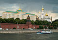

Russia
| Russian Federation
Российская Федерация
Rossiyskaya Federatsiya |
||||||
|---|---|---|---|---|---|---|
|
||||||
| Anthem: Государственный гимн Российской Федерации Gosudarstvenny gimn Rossiyskoy Federatsii (transliteration) State Anthem of the Russian Federation |
||||||
| Capital and largest city |
Moscow 55°45′N 37°37′E / 55.750°N 37.617°E |
|||||
| Official languages | Russian official throughout the country; 27 other languages co-official in various regions | |||||
| Ethnic groups (2010[1]) |
|
|||||
| Demonym | Russian | |||||
| Government | Federal semi-presidential constitutional republic | |||||
| - | President | Vladimir Putin | ||||
| - | Prime Minister | Dmitry Medvedev | ||||
| Legislature | Federal Assembly | |||||
| - | Upper house | Federation Council | ||||
| - | Lower house | State Duma | ||||
| Formation | ||||||
| - | Rurik Dynasty | 862 | ||||
| - | Kievan Rus' | 882 | ||||
| - | Vladimir-Suzdal Rus' | 1169 | ||||
| - | Grand Duchy of Moscow | 1283 | ||||
| - | Tsardom of Russia | 16 January 1547 | ||||
| - | Russian Empire | 22 October 1721 | ||||
| - | Russian SFSR | 7 November 1917 | ||||
| - | Part of Soviet Union | 10 December 1922 | ||||
| - | Russian Federation | 25 December 1991 | ||||
| Area | ||||||
| - | Total | 17,075,400 km2 (1st) 6,592,800 sq mi |
||||
| - | Water (%) | 13[2] (including swamps) | ||||
| Population | ||||||
| - | 2012 estimate | 143,300,000[3] (9th) | ||||
| - | Density | 8.3/km2 (217th) 21.5/sq mi |
||||
| GDP (PPP) | 2011 estimate | |||||
| - | Total | $3.015 trillion[4] (6th) | ||||
| - | Per capita | $21,246[5] (46th) | ||||
| GDP (nominal) | 2011 estimate | |||||
| - | Total | $1.857 trillion[6] (9th) | ||||
| - | Per capita | $13,089[7] (55th) | ||||
| Gini (2008) | 42.3[8] medium · 83rd |
|||||
| HDI (2013) | high · 55th |
|||||
| Currency | Russian ruble (RUB) |
|||||
| Time zone | (UTC+3 to +12a) | |||||
| Date format | dd.mm.yyyy | |||||
| Drives on the | right | |||||
| Calling code | +7 | |||||
| ISO 3166 code | RU | |||||
| Internet TLD | ||||||
| a. | Excluding +5. | |||||


Russia  i/ˈrʌʃə/ or /ˈrʊʃə/ (Russian: Россия, tr. Rossiya; IPA: [rɐˈsʲijə] (
i/ˈrʌʃə/ or /ˈrʊʃə/ (Russian: Россия, tr. Rossiya; IPA: [rɐˈsʲijə] ( listen)), also officially known as the Russian Federation[10] (Russian: Российская Федерация, tr. Rossiyskaya Federatsiya; IPA: [rɐˈsʲijskəjə fʲɪdʲɪˈratsɨjə] (
listen)), also officially known as the Russian Federation[10] (Russian: Российская Федерация, tr. Rossiyskaya Federatsiya; IPA: [rɐˈsʲijskəjə fʲɪdʲɪˈratsɨjə] ( listen)), is a country in northern Eurasia.[11] It is a federal semi-presidential republic, comprising 83 federal subjects. From northwest to southeast, Russia shares borders with Norway, Finland, Estonia, Latvia, Lithuania and Poland (both via Kaliningrad Oblast), Belarus, Ukraine, Georgia, Azerbaijan, Kazakhstan, China, Mongolia, and North Korea. It also has maritime borders with Japan by the Sea of Okhotsk, and the U.S. state of Alaska across the Bering Strait. At 17,075,400 square kilometres (6,592,800 sq mi), Russia is the largest country in the world, covering more than one-eighth of the Earth's inhabited land area. Russia is also the world's ninth most populous nation with 143 million people as of 2012.[3] Extending across the whole of northern Asia, Russia spans nine time zones and incorporates a wide range of environments and landforms. Russia has the world's largest reserves of mineral and energy resources[12] and is the largest producer of oil and natural gas globally.[13][14] Russia has the world's largest forest reserves.[15][16] Its lakes contain approximately one-quarter of the world's liquid fresh water, 20% in Lake Baikal alone.[17]
listen)), is a country in northern Eurasia.[11] It is a federal semi-presidential republic, comprising 83 federal subjects. From northwest to southeast, Russia shares borders with Norway, Finland, Estonia, Latvia, Lithuania and Poland (both via Kaliningrad Oblast), Belarus, Ukraine, Georgia, Azerbaijan, Kazakhstan, China, Mongolia, and North Korea. It also has maritime borders with Japan by the Sea of Okhotsk, and the U.S. state of Alaska across the Bering Strait. At 17,075,400 square kilometres (6,592,800 sq mi), Russia is the largest country in the world, covering more than one-eighth of the Earth's inhabited land area. Russia is also the world's ninth most populous nation with 143 million people as of 2012.[3] Extending across the whole of northern Asia, Russia spans nine time zones and incorporates a wide range of environments and landforms. Russia has the world's largest reserves of mineral and energy resources[12] and is the largest producer of oil and natural gas globally.[13][14] Russia has the world's largest forest reserves.[15][16] Its lakes contain approximately one-quarter of the world's liquid fresh water, 20% in Lake Baikal alone.[17]
The nation's history began with that of the East Slavs, who emerged as a recognizable group in Europe between the 3rd and 8th centuries AD.[18] Founded and ruled by a Varangian warrior elite and their descendants, the medieval state of Rus arose in the 9th century. In 988 it adopted Orthodox Christianity from the Byzantine Empire,[19] beginning the synthesis of Byzantine and Slavic cultures that defined Russian culture for the next millennium.[19] Rus' ultimately disintegrated into a number of smaller states; most of the Rus' lands were overrun by the Mongol invasion and became tributaries of the nomadic Golden Horde.[20] The Grand Duchy of Moscow gradually reunified the surrounding Russian principalities, achieved independence from the Golden Horde, and came to dominate the cultural and political legacy of Kievan Rus'. By the 18th century, the nation had greatly expanded through conquest, annexation, and exploration to become the Russian Empire, which was the third largest empire in history, stretching from Poland in Europe to Alaska in North America.[21][22]
Following the Russian Revolution, the Russian Soviet Federative Socialist Republic became the largest and leading constituent of the Soviet Union, the world's first constitutionally socialist state and a recognized superpower,[23] which played a decisive role in the Allied victory in World War II.[24][25] The Soviet era saw some of the most significant technological achievements of the 20th century, including the world's first human spaceflight. The Russian Federation became the successor state of the Russian SFSR following the dissolution of the Soviet Union in 1991, and is recognized as the continuing legal personality of the All-Union state.[26]
The Russian economy is the world's ninth largest by nominal GDP and sixth largest by purchasing power parity, with the 3rd largest nominal military budget. Russia is one of the world's fastest growing major economies. It is one of the five recognized nuclear weapons states and possesses the largest stockpile of weapons of mass destruction.[27] Russia is a great power and a permanent member of the United Nations Security Council, a member of the G8, G20, the Council of Europe, the Asia-Pacific Economic Cooperation, the Shanghai Cooperation Organisation, the Eurasian Economic Community, the Organisation for Security and Cooperation in Europe (OSCE), the World Trade Organisation (WTO), and is the leading member of the Commonwealth of Independent States.
Contents[hide] |
Etymology
The name Russia is derived from Rus, a medieval state populated mostly by the East Slavs. However, this proper name became more prominent in the later history, and the country typically was called by its inhabitants "Русская Земля" (russkaya zemlya) which could be translated as "Russian Land" or "Land of Rus'". In order to distinguish this state from other states derived from it, it is denoted as Kievan Rus' by modern historiography. The name Rus itself comes from Rus people, a group of Varangians (possibly Swedish Vikings)[28][29] who founded the state of Rus (Русь).
An old Latin version of the name Rus' was Ruthenia, mostly applied to the western and southern regions of Rus' that were adjacent to Catholic Europe. The current name of the country, Россия (Rossiya), comes from the Byzantine Greek designation of the Kievan Rus', Ρωσσία Rossía—spelt Ρωσία (Rosía pronounced [roˈsia]) in Modern Greek.[30]
History
Early periods
One of the first modern human bones of the age of 35,000 years was found in Russia, in Kostenki on the Don River banks.[citation needed] The only remains of the Denisova hominin that lived about 41,000 years ago were discovered in Denisova Cave (South Siberia).[citation needed]
In prehistoric times the vast steppes of Southern Russia were home to tribes of nomadic pastoralists.[31] Remnants of these steppe civilizations were discovered in such places as Ipatovo,[31] Sintashta,[32] Arkaim,[33] and Pazyryk,[34] which bear the earliest known traces of mounted warfare, a key feature in nomadic way of life.
In classical antiquity, the Pontic Steppe was known as Scythia. Since the 8th century BC, Ancient Greek traders brought their civilization to the trade emporiums in Tanais and Phanagoria. The Romans settled on the western part of the Caspian Sea, where their empire stretched towards the east.[35] In 3rd – 4th centuries AD a semi-legendary Gothic kingdom of Oium existed in Southern Russia till it was overrun by Huns. Between the 3rd and 6th centuries AD, the Bosporan Kingdom, a Hellenistic polity which succeeded the Greek colonies,[36] was also overwhelmed by nomadic invasions led by warlike tribes, such as the Huns and Eurasian Avars.[37] A Turkic people, the Khazars, ruled the lower Volga basin steppes between the Caspian and Black Seas until the 10th century.[38]
The ancestors of modern Russians are the Slavic tribes, whose original home is thought by some scholars to have been the wooded areas of the Pinsk Marshes.[39] The East Slavs gradually settled Western Russia in two waves: one moving from Kiev toward present-day Suzdal and Murom and another from Polotsk toward Novgorod and Rostov. From the 7th century onwards, the East Slavs constituted the bulk of the population in Western Russia[40] and slowly but peacefully assimilated the native Finno-Ugric peoples, including the Merya, the Muromians, and the Meshchera.
Kievan Rus
The establishment of the first East Slavic states in the 9th century coincided with the arrival of Varangians, the traders, warriors and settlers from the Baltic Sea region. Primarily they were Vikings of Scandinavian origin, who ventured along the waterways extending from the eastern Baltic to the Black and Caspian Seas.[41] According to the Primary Chronicle, a Varangian from Rus' people, named Rurik, was elected ruler of Novgorod in 862. In 882 his successor Oleg ventured south and conquered Kiev,[42] which had been previously paying tribute to the Khazars, founding Kievan Rus'. Oleg, Rurik's son Igor and Igor's son Sviatoslav subsequently subdued all local East Slavic tribes to Kievan rule, destroyed the Khazar khaganate and launched several military expeditions to Byzantium and Persia.
In the 10th to 11th centuries Kievan Rus' became one of the largest and most prosperous states in Europe.[43] The reigns of Vladimir the Great (980–1015) and his son Yaroslav the Wise (1019–1054) constitute the Golden Age of Kiev, which saw the acceptance of Orthodox Christianity from Byzantium and the creation of the first East Slavic written legal code, the Russkaya Pravda.
In the 11th and 12th centuries, constant incursions by nomadic Turkic tribes, such as the Kipchaks and the Pechenegs, caused a massive migration of Slavic populations to the safer, heavily forested regions of the north, particularly to the area known as Zalesye.[44]
The age of feudalism and decentralization was marked by constant in-fighting between members of the Rurik Dynasty that ruled Kievan Rus' collectively. Kiev's dominance waned, to the benefit of Vladimir-Suzdal in the north-east, Novgorod Republic in the north-west and Galicia-Volhynia in the south-west.
Ultimately Kievan Rus' disintegrated, with the final blow being the Mongol invasion of 1237–40,[45] that resulted in the destruction of Kiev[46] and the death of about half the population of Rus'.[47] The invading Mongol elite, together with their conquered Turkic subjects (Cumans, Kipchaks, Bulgars) became known as Tatars, formed the state of the Golden Horde, which pillaged the Russian principalities; the Mongols ruled the Cuman-Kipchak confederation and Volga Bulgaria (modern-day southern and central expanses of Russia) for over two centuries.[48]
Galicia-Volhynia was eventually assimilated by the Polish-Lithuanian Commonwealth, while the Mongol-dominated Vladimir-Suzdal and Novgorod Republic, two regions on the periphery of Kiev, established the basis for the modern Russian nation.[19] The Novgorod together with Pskov retained some degree of autonomy during the time of the Mongol yoke and were largely spared the atrocities that affected the rest of the country. Led by Prince Alexander Nevsky, Novgorodians repelled the invading Swedes in the Battle of the Neva in 1240, as well as the Germanic crusaders in the Battle of the Ice in 1242, breaking their attempts to colonize the Northern Rus'.
Grand Duchy of Moscow
The most powerful successor state to Kievan Rus' was the Grand Duchy of Moscow ("Moscovy" in the Western chronicles), initially a part of Vladimir-Suzdal. While still under the domain of the Mongol-Tatars and with their connivance, Moscow began to assert its influence in the Central Rus' in the early 14th century, gradually becoming the main leading force in the process of the Rus' lands' reunification and expansion of Russia.
Those were hard times, with frequent Mongol-Tatar raids and agriculture suffering from the beginning of the Little Ice Age. As in the rest of Europe, plagues hit Russia somewhere once every five or six years from 1350 to 1490. However, due to the lower population density and better hygiene (widespread practicing of banya, the wet steam bath),[49] the population loss caused by plagues was not so severe as in the Western Europe, and the pre-Plague populations were reached in Russia as early as 1500.[50]
Led by Prince Dmitry Donskoy of Moscow and helped by the Russian Orthodox Church, the united army of Russian principalities inflicted a milestone defeat on the Mongol-Tatars in the Battle of Kulikovo in 1380. Moscow gradually absorbed the surrounding principalities, including the formerly strong rivals, such as Tver and Novgorod.
Ivan III (the Great) finally threw off the control of the Golden Horde, consolidated the whole of Central and Northern Rus' under Moscow's dominion, and was the first to take the title "Grand Duke of all the Russias".[51] After the fall of Constantinople in 1453, Moscow claimed succession to the legacy of the Eastern Roman Empire. Ivan III married Sophia Palaiologina, the niece of the last Byzantine emperor Constantine XI, and made the Byzantine double-headed eagle his own, and eventually Russian, coat-of-arms.
Tsardom of Russia
In development of the Third Rome ideas, the Grand Duke Ivan IV (the "Awesome"[52]) was officially crowned the first Tsar ("Caesar") of Russia in 1547. The Tsar promulgated a new code of laws (Sudebnik of 1550), established the first Russian feudal representative body (Zemsky Sobor) and introduced local self-management into the rural regions.[53][54]
During his long reign, Ivan the Terrible nearly doubled the already large Russian territory by annexing the three Tatar khanates (parts of disintegrated Golden Horde): Kazan and Astrakhan along the Volga River, and Sibirean Khanate in South Western Siberia. Thus by the end of the 16th century Russia was transformed into a multiethnic, multidenominational and transcontinental state.
However, the Tsardom was weakened by the long and unsuccessful Livonian War against the coalition of Poland, Lithuania, and Sweden for access to the Baltic coast and sea trade.[55] At the same time the Tatars of the Crimean Khanate, the only remaining successor to the Golden Horde, continued to raid Southern Russia.[56] In effort to restore the Volga khanates, Crimeans and their Ottoman allies invaded central Russia and were even able to burn down parts of Moscow in 1571.[57] But next year the large invading army was thoroughly defeated by Russians in the Battle of Molodi, forever eliminating the threat of the Ottoman-Crimean expansion into Russia. The raids of Crimeans, however, didn't cease until the late 17th century, though the construction of new fortification lines across Southern Russia, such as the Great Abatis Line, constantly narrowed the area accessible to incursions.
The death of Ivan's sons marked the end of the ancient Rurik Dynasty in 1598, and in combination with the famine of 1601–03[58] led to the civil war, the rule of pretenders and foreign intervention during the Time of Troubles in the early 17th century.[59] Polish-Lithuanian Commonwealth occupied parts of Russia, including Moscow. In 1612 the Poles were forced to retreat by the Russian volunteer corps, led by two national heroes, merchant Kuzma Minin and Prince Dmitry Pozharsky. The Romanov Dynasty acceded the throne in 1613 by the decision of Zemsky Sobor, and the country started its gradual recovery from the crisis.
Russia continued its territorial growth through the 17th century, which was the age of Cossacks. Cossacks were warriors organized into military communities, resembling pirates and pioneers of the New World. In 1648, the peasants of Ukraine joined the Zaporozhian Cossacks in rebellion against Poland-Lithuania during the Khmelnytsky Uprising, because of the social and religious oppression they suffered under Polish rule. In 1654 the Ukrainian leader, Bohdan Khmelnytsky, offered to place Ukraine under the protection of the Russian Tsar, Aleksey I. Aleksey's acceptance of this offer led to another Russo-Polish War (1654–1667). Finally, Ukraine was split along the Dnieper River, leaving the western part (or Right-bank Ukraine) under Polish rule and eastern part (Left-bank Ukraine and Kiev) under Russian. Later, in 1670–71 the Don Cossacks led by Stenka Razin initiated a major uprising in the Volga Region, but the Tsar's troops were successful in defeating the rebels.
In the east, the rapid Russian exploration and colonisation of the huge territories of Siberia was led mostly by Cossacks hunting for valuable furs and ivory. Russian explorers pushed eastward primarily along the Siberian River Routes, and by the mid-17th century there were Russian settlements in Eastern Siberia, on the Chukchi Peninsula, along the Amur River, and on the Pacific coast. In 1648 the Bering Strait between Asia and North America was passed for the first time by Fedot Popov and Semyon Dezhnyov.
Imperial Russia
Under Peter the Great, Russia was proclaimed an Empire in 1721 and became recognized as a world power. Ruling from 1682 to 1725, Peter defeated Sweden in the Great Northern War, forcing it to cede West Karelia and Ingria (two regions lost by Russia in the Time of Troubles),[60] as well as Estland and Livland, securing Russia's access to the sea and sea trade.[61] On the Baltic Sea Peter founded a new capital called Saint Petersburg, later known as Russia's Window to Europe. Peter the Great's reforms brought considerable Western European cultural influences to Russia.
The reign of Peter I's daughter Elizabeth in 1741–62 saw Russia's participation in the Seven Years' War (1756–63). During this conflict Russia annexed East Prussia for a while and even took Berlin. However, upon Elisabeth's death, all these conquests were returned to Kingdom of Prussia by pro-Prussian Peter III of Russia.
Catherine II (the Great), who ruled in 1762–96, presided over the Age of Russian Enlightenment. She extended Russian political control over the Polish-Lithuanian Commonwealth and incorporated most of its territories into Russia during the Partitions of Poland, pushing the Russian frontier westward into Central Europe. In the south, after successful Russo-Turkish Wars against the Ottoman Empire, Catherine advanced Russia's boundary to the Black Sea, defeating the Crimean Khanate. As a result of victories over the Ottomans, by the early 19th century Russia also made significant territorial gains in Transcaucasia. This continued with Alexander I's (1801–25) wresting of Finland from the weakened kingdom of Sweden in 1809 and of Bessarabia from the Ottomans in 1812. At the same time Russians colonized Alaska and even founded settlements in California, like Fort Ross.
In 1803–06, the first Russian circumnavigation was made, later followed by other notable Russian sea exploration voyages. In 1820 a Russian expedition discovered the continent of Antarctica.
In alliances with various European countries, Russia fought against Napoleon's France. The French invasion of Russia at the height of Napoleon's power in 1812 failed miserably as the obstinate resistance in combination with the bitterly cold Russian Winter led to a disastrous defeat of invaders, in which more than 95% of the pan-European Grande Armée perished.[62] Led by Mikhail Kutuzov and Barclay de Tolly, the Russian army ousted Napoleon from the country and drove through Europe in the war of the Sixth Coalition, finally entering Paris. Alexander I headed Russia's delegation at the Congress of Vienna that defined the map of post-Napoleonic Europe.
The officers of the Napoleonic Wars brought ideas of liberalism back to Russia with them and attempted to curtail the tsar's powers during the abortive Decembrist revolt of 1825. At the end of the conservative reign of Nicolas I (1825–55), a zenith period of Russia's power and influence in Europe was disrupted by defeat in the Crimean War. Between 1847 and 1851, a massive wave of Asiatic cholera swept over Russia, claiming about one million lives.[63]
Nicholas's successor Alexander II (1855–81) enacted significant changes in the country, including the emancipation reform of 1861. These Great Reforms spurred industrialization and modernized the Russian army, which had successfully liberated Bulgaria from Ottoman rule in 1877–78 Russo-Turkish War.
The late 19th century saw the rise of various socialist movements in Russia. Alexander II was killed in 1881 by revolutionary terrorists, and the reign of his son Alexander III (1881–94) was less liberal but more peaceful. The last Russian Emperor, Nicholas II (1894–1917), was unable to prevent the events of the Russian Revolution of 1905, triggered by the unsuccessful Russo-Japanese War and the demonstration incident known as Bloody Sunday. The uprising was put down, but the government was forced to concede major reforms, including granting the freedoms of speech and assembly, the legalization of political parties, and the creation of an elected legislative body, the State Duma of the Russian Empire. Migration to Siberia increased rapidly in the early 20th century, particularly during the Stolypin agrarian reform. Between 1906 and 1914 more than four million settlers arrived in that region.[64]
In 1914 Russia entered World War I in response to Austria-Hungary's declaration of war on Russia's ally Serbia, and fought across multiple fronts while isolated from its Triple Entente allies. In 1916 the Brusilov Offensive of the Russian Army almost completely destroyed the military of Austria-Hungary. However, the already-existing public distrust of the regime was deepened by the rising costs of war, high casualties, and rumors of corruption and treason. All this formed the climate for the Russian Revolution of 1917, carried out in two major acts.
The February Revolution forced Nicholas II to abdicate; he and his family were imprisoned and later executed during the Russian Civil War. The monarchy was replaced by a shaky coalition of political parties that declared itself the Provisional Government. An alternative socialist establishment existed alongside, the Petrograd Soviet, wielding power through the democratically elected councils of workers and peasants, called Soviets. The rule of the new authorities only aggravated the crisis in the country, instead of resolving it. Eventually, the October Revolution, led by Bolshevik leader Vladimir Lenin, overthrew the Provisional Government and gave full governing power to the Soviets, leading to the creation of the world's first socialist state.
Soviet Union
Following the October Revolution, a civil war broke out between the anti-communist White movement and the new Soviet regime with its Red Army. Russia lost its Ukrainian, Polish, Baltic, and Finnish territories by signing the Treaty of Brest-Litovsk that concluded hostilities with the Central Powers in World War I. The Allied powers launched an unsuccessful military intervention in support of anti-Communist forces, while both the Bolsheviks and White movement carried out campaigns of deportations and executions against each other, known respectively as the Red Terror and White Terror. By the end of the civil war, the Russian economy and infrastructure were heavily damaged. Millions became White émigrés,[65] and the Povolzhye famine of 1921 claimed up to 5 million victims.[66]
The Russian Soviet Federative Socialist Republic (called Russian Socialist Federative Soviet Republic at the time) together with the Ukrainian, Byelorussian, and Transcaucasion Soviet Socialist Republics, formed the Union of Soviet Socialist Republics (USSR), or Soviet Union, on 30 December 1922. Out of the 15 total republics that would make up the USSR, the Russian SFSR was the largest in terms of size, and making up over half of the total USSR population, dominated the union for its entire 69-year history.
Following Lenin's death in 1924, a troika had been designated to govern the Soviet Union. However, Joseph Stalin, an elected General Secretary of the Communist Party, managed to put down all opposition groups within the party and consolidate much power in his hands. Leon Trotsky, the main proponent of the world revolution, was exiled from the Soviet Union in 1929, and Stalin's idea of Socialism in One Country became the primary line. The continued internal struggle in the Bolshevik party culminated in the Great Purge, a period of mass repressions in 1937–38, in which hundreds of thousands of people were executed, including original party members and military leaders convicted in coup d'état plots.[67]
Under Stalin's leadership, the government launched a planned economy, industrialisation of the largely rural country, and collectivization of its agriculture. During this period of rapid economical and social changes, millions of people were sent to penal labor camps,[68] including many political convicts who opposed Stalin's rule, and millions were deported and exiled to remote areas of the Soviet Union.[68] The transitional disorganisation of the country's agriculture, combined with the harsh state policies and a drought, led to the Soviet famine of 1932–1933.[69] However, though with a heavy price, the Soviet Union was transformed from a largely agrarian economy to a major industrial powerhouse in a short span of time.
The Appeasement policy of Great Britain and France towards Adolf Hitler's annexation of Austria and Czechoslovakia enlarged the might of Nazi Germany and put a threat of war to the Soviet Union. Around the same time the Third Reich allied with the Empire of Japan, a rival of the USSR in the Far East and an open enemy in the Soviet–Japanese Border Wars in 1938–39.
In August 1939, after another failure of attempts to establish an anti-Nazi alliance with Britain and France, the Soviet government decided to improve relations with Germany by concluding the Molotov-Ribbentrop Pact, pledging non-aggression between the two countries and dividing their spheres of influence in Eastern Europe. While Hitler conquered Poland, France and other countries acting on single front at the start of World War II, the USSR was able to build up its military and claim some of the former territories of the Russian Empire as a result of the Soviet invasion of Poland, Winter War and occupation of the Baltic states.
On 22 June 1941, Nazi Germany broke the non-aggression treaty and invaded the Soviet Union with the largest and most powerful invasion force in human history,[70] opening the largest theater of World War II. Although the German army had considerable success early on, their onslaught was halted in the Battle of Moscow. Subsequently the Germans were dealt major defeats first at the Battle of Stalingrad in the winter of 1942–43,[71] and then in the Battle of Kursk in the summer of 1943. Another German failure was the Siege of Leningrad, in which the city was fully blockaded on land between 1941–44 by German and Finnish forces, suffering starvation and more than a million deaths, but never surrendering.[72] Under Stalin's administration and the leadership of such commanders as Georgy Zhukov and Konstantin Rokossovsky, Soviet forces drove through Eastern Europe in 1944–45 and captured Berlin in May 1945. In August 1945 the Soviet Army ousted Japanese from China's Manchukuo and North Korea, contributing to the allied victory over Japan.
The 1941–45 period of World War II is known in Russia as the Great Patriotic War. In this conflict, which included many of the most lethal battle operations in human history, Soviet military and civilian deaths were 10.6 million and 15.9 million respectively,[73] accounting for about a third of all World War II casualties. The full demographic loss to the Soviet peoples was even greater.[74] The Soviet economy and infrastructure suffered massive devastation[75] but the Soviet Union emerged as an acknowledged superpower.
The Red Army occupied Eastern Europe after the war, including East Germany. Dependent socialist governments were installed in the Eastern Bloc satellite states. Becoming the world's second nuclear weapons power, the USSR established the Warsaw Pact alliance and entered into a struggle for global dominance, known as the Cold War, with the United States and NATO. The Soviet Union supported revolutionary movements across the world, including the newly formed People's Republic of China, the Democratic People's Republic of Korea and, later on, the Republic of Cuba. Significant amounts of the Soviet resources were allocated in aid to the other socialist states.[76]
After Stalin's death and a short period of collective rule, new leader Nikita Khrushchev denounced the cult of personality of Stalin and launched the policy of de-Stalinization. Penal labor system was reformed and many prisoners were released and rehabilitated (many of them posthumously).[77] The general easement of repressive policies became known later as the Khrushchev Thaw. At the same time, tensions with the United States heightened when the two rivals clashed over the deployment of the U.S. Jupiter missiles in Turkey and Soviet missiles in Cuba.
In 1957 the Soviet Union launched the world's first artificial satellite, Sputnik 1, thus starting the Space Age. Russian cosmonaut Yuri Gagarin became the first human to orbit the Earth aboard Vostok 1 manned spacecraft on 12 April 1961.
Following the ousting of Khrushchev in 1964, another period of collective rule ensued, until Leonid Brezhnev became the leader. The era of 1970s and the early 1980s was designated later as the Era of Stagnation, a period when the economic growth slowed and social policies became static. The 1965 Kosygin reform, aimed into partial decentralization of the Soviet economy and shifting the emphasis from heavy industry and weapons to light industry and consumer goods, was stifled by the conservative Communist leadership.
In 1979, after a Communist-led revolution in Afghanistan, Soviet forces entered the country by request of the new regime. The occupation drained economic resources and dragged on without achieving meaningful political results. Ultimately the Soviet Army was withdrawn from Afghanistan in 1989 because of international opposition, persistent anti-Soviet guerilla warfare (enhanced by the U.S.), and a lack of support from Soviet citizens.
From 1985 onwards, the last Soviet leader Mikhail Gorbachev, who sought to enact liberal reforms in the Soviet system, introduced the policies of glasnost (openness) and perestroika (restructuring) in an attempt to end the period of economic stagnation in the country and democratise the government. However, this led to the rise of strong nationalist and separatist movements. Prior to 1991, the Soviet economy was the second largest in the world,[78] but during its last years it was afflicted by shortages of goods in grocery stores, huge budget deficits, and explosive growth in money supply leading to inflation.[79]
By 1991, economic and political turmoil were beginning to boil over, as the Baltic republics chose to secede from the Union. On 17 March, a referendum was held, to which the vast majority of participating citizens voted in favour of preserving the Soviet Union as a renewed federation. In August 1991, a coup d'état attempt by members of Gorbachev's government, directed against Gorbachev and aimed at preserving the Soviet Union, instead led to the end of the Communist Party of the Soviet Union. Despite the will expressed by the people, on 25 December 1991, the USSR was dissolved into 15 post-Soviet states.
Russian Federation
Boris Yeltsin was elected the President of Russia in June 1991, in the first direct presidential election in Russian history. During and after the Soviet disintegration, wide-ranging reforms including privatization and market and trade liberalization were being undertaken,[80] including the radical changes along the lines of "shock therapy" as recommended by the United States and International Monetary Fund.[81] All this resulted in a major economic crisis, characterized by 50% decline of both GDP and industrial output between 1990–95.[80][82]
The privatization largely shifted control of enterprises from state agencies to individuals with inside connections in the government system. Many of the newly rich businesspeople took billions in cash and assets outside of the country in an enormous capital flight.[83] The depression of state and economy led to the collapse of social services; the birth rate plummeted while the death rate skyrocketed.[citation needed] Millions plunged into poverty, from 1.5% level of poverty in the late Soviet era, to 39–49% by mid-1993.[84] The 1990s saw extreme corruption and lawlessness, rise of criminal gangs and violent crime.[85]
The 1990s were plagued by armed conflicts in the North Caucasus, both local ethnic skirmishes and separatist Islamist insurrections. Since the Chechen separatists had declared independence in the early 1990s, an intermittent guerrilla war was fought between the rebel groups and the Russian military. Terrorist attacks against civilians carried out by separatists, most notably the Moscow theater hostage crisis and Beslan school siege, caused hundreds of deaths and drew worldwide attention.
Russia took up the responsibility for settling the USSR's external debts, even though its population made up just half of the population of the USSR at the time of its dissolution.[86] High budget deficits caused the 1998 Russian financial crisis[87] and resulted in further GDP decline.[80]
On 31 December 1999 President Yeltsin resigned, handing the post to the recently appointed Prime Minister, Vladimir Putin, who then won the 2000 presidential election. Putin suppressed the Chechen insurgency, although sporadic violence still occurs throughout the Northern Caucasus. High oil prices and initially weak currency followed by increasing domestic demand, consumption and investments has helped the economy grow for nine straight years, improving the standard of living and increasing Russia's influence on the world stage.[88] While many reforms made during the Putin presidency have been generally criticized by Western nations as un-democratic,[89] Putin's leadership over the return of order, stability, and progress has won him widespread popularity in Russia.[90]
On 2 March 2008, Dmitry Medvedev was elected President of Russia, whilst Putin became Prime Minister. Putin returned to the presidency following the 2012 presidential elections, and Medvedev was appointed Prime Minister.
Politics
Governance
According to the Constitution of Russia, the country is a federation and semi-presidential republic, wherein the President is the head of state[91] and the Prime Minister is the head of government. The Russian Federation is fundamentally structured as a multi-party representative democracy, with the federal government composed of three branches:
- Legislative: The bicameral Federal Assembly, made up of the 450-member State Duma and the 166-member Federation Council, adopts federal law, declares war, approves treaties, has the power of the purse and the power of impeachment of the President.
- Executive: The President is the commander-in-chief of the military, can veto legislative bills before they become law, and appoints the Government (Cabinet) and other officers, who administer and enforce federal laws and policies.
- Judicial: The Constitutional Court, Supreme Court, Supreme Court of Arbitration and lower federal courts, whose judges are appointed by the Federation Council on the recommendation of the President, interpret laws and can overturn laws they deem unconstitutional.
The president is elected by popular vote for a six-year term (eligible for a second term, but not for a third consecutive term).[92] Ministries of the government are composed of the Premier and his deputies, ministers, and selected other individuals; all are appointed by the President on the recommendation of the Prime Minister (whereas the appointment of the latter requires the consent of the State Duma). Leading political parties in Russia include United Russia, the Communist Party, the Liberal Democratic Party of Russia, and A Just Russia.
Western observers have raised questions as to how much of Russia's political system corresponds to Western liberal democratic ideals. Academics have often complained about the difficulty of classifying Russia's political system. According to Steve White, it was made clear during the Putin presidency that Russia had no intention of establishing a "second edition" of the American or British political system, but rather a system that was closer to Russia's own traditions and circumstances.[93] Richard Sakwa wrote that the Russian government is undoubtedly considered legitimate by the great majority of the Russian people and seeks to deliver a set of public goods without appealing to extra-democratic logic to achieve them, but whether the system was becoming an illiberal or delegative democracy was more contentious.[94]
Freedom House lists Russia as being "Not Free".[95]
Foreign relations
The Russian Federation is recognized in international law as a successor state of the former Soviet Union.[26] Russia continues to implement the international commitments of the USSR, and has assumed the USSR's permanent seat in the UN Security Council, membership in other international organisations, the rights and obligations under international treaties, and property and debts. Russia has a multifaceted foreign policy. As of 2009, it maintains diplomatic relations with 191 countries and has 144 embassies. The foreign policy is determined by the President and implemented by the Ministry of Foreign Affairs of Russia.[96]
As the successor to a former superpower, Russia's geopolitical status has been often debated, particularly in relation to unipolar and multipolar views on the global political system. While Russia is commonly accepted to be a great power, in recent years it has been characterized by a number of world leaders,[97][98] scholars,[99] commentators and politicians[100] as a currently reinstating or potential superpower.[101][102][103]
An important aspect of Russia's relations with the West is the criticism of Russia's political system and human rights management by the Western governments, the mass media and the leading democracy and human rights watchdogs. In particular, such organisations as the Amnesty International and Human Rights Watch consider Russia to have not enough democratic attributes and to allow few political rights and civil liberties to its citizens.[104][105] Freedom House, an international organisation funded by the United States, ranks Russia as "not free", citing "carefully engineered elections" and "absence" of debate.[106] Russian authorities dismiss these claims and especially criticise Freedom House. The Russian Ministry of Foreign Affairs has called the 2006 Freedom in the World report "prefabricated", stating that the human rights issues have been turned into a political weapon in particular by the United States. The ministry also claims that such organisations as Freedom House and Human Rights Watch use the same scheme of voluntary extrapolation of "isolated facts that of course can be found in any country" into "dominant tendencies".[107]
As one of five permanent members of the UN Security Council, Russia plays a major role in maintaining international peace and security. The country participates in the Quartet on the Middle East and the Six-party talks with North Korea. Russia is a member of the G8 industrialized nations, the Council of Europe, OSCE and APEC. Russia usually takes a leading role in regional organisations such as the CIS, EurAsEC, CSTO, and the SCO.[108] Former President Vladimir Putin had advocated a strategic partnership with close integration in various dimensions including establishment of EU-Russia Common Spaces.[109] Since the dissolution of the Soviet Union, Russia has developed a friendlier, albeit volatile relationship with NATO. The NATO-Russia Council was established in 2002 to allow the 26 Allies and Russia to work together as equal partners to pursue opportunities for joint collaboration.[110]
Russia maintains strong and positive relations with other BRIC countries. In recent years, the country has sought to strengthen ties especially with the People's Republic of China by signing the Treaty of Friendship as well as building the Trans-Siberian oil pipeline geared toward growing Chinese energy needs.[111]
Military
The Russian military is divided into the Ground Forces, Navy, and Air Force. There are also three independent arms of service: Strategic Missile Troops, Russian Space Forces, and the Airborne Troops. In 2006, the military had 1.037 million personnel on active duty.[112] It is mandatory for all male citizens aged 18–27 to be drafted for a year of service in Armed Forces.[88]
Russia has the largest stockpile of nuclear weapons in the world. It has the second largest fleet of ballistic missile submarines and is the only country apart from the U.S. with a modern strategic bomber force.[27][113] Russia's tank force is the largest in the world, its surface navy and air force are among the largest ones.
The country has a large and fully indigenous arms industry, producing most of its own military equipment with only few types of weapons imported. Russia is the world's top supplier of arms, a spot it has held since 2001, accounting for around 30% of worldwide weapons sales[114] and exporting weapons to about 80 countries.[115]
Official government military spending for 2012 was $71.9 billion, the third largest in the world, though various sources have estimated Russia's military expenditures to be considerably higher.[112][116] Currently, a major equipment upgrade worth about $200 billion is on its way between 2006 and 2015.[117]
According to 2012 Global Peace Index, Russia is the sixth least peaceful country in the world, principally because of its defense industry. Russia has historically ranked low on the index since its inception in 2007.[118]
Political divisions
- Federal subjects
The Russian Federation comprises 83 federal subjects.[119] These subjects have equal representation—two delegates each—in the Federation Council.[120] However, they differ in the degree of autonomy they enjoy.
- 46 oblasts (provinces): most common type of federal subjects, with locally elected[121] governor and legislature.
- 21 republics: nominally autonomous; each has its own constitution, direct-elected[121] head of republic[122] or a similar post, and parliament. Republics are allowed to establish their own official language alongside Russian but are represented by the federal government in international affairs. Republics are meant to be home to specific ethnic minorities.
- 9 krais (territories): essentially the same as oblasts. The "territory" designation is historic, originally given to frontier regions and later also to the administrative divisions that comprised autonomous okrugs or autonomous oblasts.
- 4 autonomous okrugs (autonomous districts): originally autonomous entities within oblasts and krais created for ethnic minorities, their status was elevated to that of federal subjects in the 1990s. With the exception of Chukotka Autonomous Okrug, all autonomous okrugs are still administratively subordinated to a krai or an oblast of which they are a part.
- 1 autonomous oblast (the Jewish Autonomous Oblast): historically, autonomous oblasts were administrative units subordinated to krais. In 1990, all of them except for the Jewish AO were elevated in status to that of a republic.
- 2 federal cities (Moscow and St. Petersburg): major cities that function as separate regions.
- Federal districts
Federal subjects are grouped into eight federal districts, each administered by an envoy appointed by the President of Russia.[123] Unlike the federal subjects, the federal districts are not a subnational level of government, but are a level of administration of the federal government. Federal districts' envoys serve as liaisons between the federal subjects and the federal government and are primarily responsible for overseeing the compliance of the federal subjects with the federal laws.
Geography
Russia is the largest country in the world; its total area is 17,075,400 square kilometres (6,592,800 sq mi). There are 23 UNESCO World Heritage Sites in Russia, 40 UNESCO biosphere reserves,[124] 41 national parks and 101 nature reserves. It lies between latitudes 41° and 82° N, and longitudes 19° E and 169° W.
Russia has a wide natural resource base, including major deposits of timber, petroleum, natural gas, coal, ores and other mineral resources.
Topography
The two widest separated points in Russia are about 8,000 km (4,971 mi) apart along a geodesic line. These points are: the boundary with Poland on a 60 km (37 mi) long Vistula Spit separating the Gdańsk Bay from the Vistula Lagoon; and the farthest southeast of the Kuril Islands. The points which are furthest separated in longitude are 6,600 km (4,101 mi) apart along a geodesic line. These points are: in the west, the same spit; in the east, the Big Diomede Island. The Russian Federation spans 9 time zones.
Most of Russia consists of vast stretches of plains that are predominantly steppe to the south and heavily forested to the north, with tundra along the northern coast. Russia possesses 10% of the world's arable land.[125] Mountain ranges are found along the southern borders, such as the Caucasus (containing Mount Elbrus, which at 5,642 m (18,510 ft) is the highest point in both Russia and Europe) and the Altai (containing Mount Belukha, which at the 4,506 m (14,783 ft) is the highest point of Siberia outside of the Russian Far East); and in the eastern parts, such as the Verkhoyansk Range or the volcanoes of Kamchatka Peninsula (containing Klyuchevskaya Sopka, which at the 4,750 m (15,584 ft) is the highest active volcano in Eurasia as well as the highest point of Asian Russia). The Ural Mountains, rich in mineral resources, form a north-south range that divides Europe and Asia.
Russia has an extensive coastline of over 37,000 km (22,991 mi) along the Arctic and Pacific Oceans, as well as along the Baltic Sea, Sea of Azov, Black Sea and Caspian Sea.[88] The Barents Sea, White Sea, Kara Sea, Laptev Sea, East Siberian Sea, Chukchi Sea, Bering Sea, Sea of Okhotsk, and the Sea of Japan are linked to Russia via the Arctic and Pacific. Russia's major islands and archipelagos include Novaya Zemlya, the Franz Josef Land, the Severnaya Zemlya, the New Siberian Islands, Wrangel Island, the Kuril Islands, and Sakhalin. The Diomede Islands (one controlled by Russia, the other by the U.S.) are just 3 km (1.9 mi) apart, and Kunashir Island is about 20 km (12.4 mi) from Hokkaido, Japan.

Russia has thousands of rivers and inland bodies of water, providing it with one of the world's largest surface water resources. The largest and most prominent of Russia's bodies of fresh water is Lake Baikal, the world's deepest, purest, oldest and most capacious fresh water lake.[126] Baikal alone contains over one-fifth of the world's fresh surface water.[17] Other major lakes include Ladoga and Onega, two of the largest lakes in Europe. Russia is second only to Brazil in volume of the total renewable water resources. Of the country's 100,000 rivers,[127] the Volga is the most famous, not only because it is the longest river in Europe, but also because of its major role in Russian history.[88] The Siberian rivers Ob, Yenisey, Lena and Amur are among the longest rivers in the world.
Climate

The enormous size of Russia and the remoteness of many areas from the sea result in the dominance of the humid continental climate, which is prevalent in all parts of the country except for the tundra and the extreme southeast. Mountains in the south obstruct the flow of warm air masses from the Indian Ocean, while the plain of the west and north makes the country open to Arctic and Atlantic influences.[128]
Most of Northern European Russia and Siberia has a subarctic climate, with extremely severe winters in the inner regions of Northeast Siberia (mostly the Sakha Republic, where the Northern Pole of Cold is located with the record low temperature of −71.2 °C/−96.2 °F), and more moderate elsewhere. The strip of land along the shore of the Arctic Ocean, as well as the Russian Arctic islands, have a polar climate.
The coastal part of Krasnodar Krai on the Black Sea, most notably in Sochi, possesses a humid subtropical climate with mild and wet winters. Winter is dry compared to summer in many regions of East Siberia and the Far East, while other parts of the country experience more even precipitation across seasons. Winter precipitation in most parts of the country usually falls as snow. The region along the Lower Volga and Caspian Sea coast, as well as some areas of southernmost Siberia, possesses a semi-arid climate.
| [hide]Climate data for Russia (records) | |||||||||||||
|---|---|---|---|---|---|---|---|---|---|---|---|---|---|
| Month | Jan | Feb | Mar | Apr | May | Jun | Jul | Aug | Sep | Oct | Nov | Dec | Year |
| Record high °C (°F) | 22.2 (72) |
23.8 (74.8) |
30.3 (86.5) |
34.0 (93.2) |
37.7 (99.9) |
43.2 (109.8) |
45.4 (113.7) |
43.5 (110.3) |
41.5 (106.7) |
33.7 (92.7) |
29.1 (84.4) |
25.0 (77) |
45.4 (113.7) |
| Record low °C (°F) | −71.2 (−96.2) |
−64.4 (−83.9) |
−60.6 (−77.1) |
−46.4 (−51.5) |
−28.9 (−20) |
−9.7 (14.5) |
−9.3 (15.3) |
−17.1 (1.2) |
−25.3 (−13.5) |
−47.6 (−53.7) |
−58.5 (−73.3) |
−62.8 (−81) |
−71.2 (−96.2) |
| Source: Pogoda.ru.net[129] | |||||||||||||
Throughout much of the territory there are only two distinct seasons—winter and summer; spring and autumn are usually brief periods of change between extremely low temperatures and extremely high.[128] The coldest month is January (February on the coastline), the warmest usually is July. Great ranges of temperature are typical. In winter, temperatures get colder both from south to north and from west to east. Summers can be quite hot, even in Siberia.[130] The continental interiors are the driest areas.
Biodiversity
From north to south the East European Plain, also known as Russian Plain, is clad sequentially in Arctic tundra, coniferous forest (taiga), mixed and broad-leaf forests, grassland (steppe), and semi-desert (fringing the Caspian Sea), as the changes in vegetation reflect the changes in climate. Siberia supports a similar sequence but is largely taiga. Russia has the world's largest forest reserves, known as "the lungs of Europe",[131] second only to the Amazon Rainforest in the amount of carbon dioxide it absorbs.
There are 266 mammal species and 780 bird species in Russia. A total of 415 animal species have been included in the Red Data Book of the Russian Federation as of 1997[132] and are now protected.
Economy
Russia has a market economy with enormous natural resources, particularly oil and natural gas. It has the 10th largest economy in the world by nominal GDP and the 6th largest by purchasing power parity (PPP). Since the turn of the 21st century, higher domestic consumption and greater political stability have bolstered economic growth in Russia. The country ended 2008 with its ninth straight year of growth, averaging 7% annually between 2000 and 2008. Real GDP per capita, PPP (current international $) was 19,840 in 2010.[133] Growth was primarily driven by non-traded services and goods for the domestic market, as opposed to oil or mineral extraction and exports.[88] The average nominal salary in Russia was $640 per month in early 2008, up from $80 in 2000.[134] In the end of 2011 the average nominal monthly wages reached 24,310 RUR (or $810 USD),[135] while tax on the income of individuals is payable at the rate of 13% on most incomes.[136] Approximately 13.7% of Russians lived below the national poverty line in 2010,[137] significantly down from 40% in 1998 at the worst point of the post-Soviet collapse.[84] Unemployment in Russia was at 6% in 2007, down from about 12.4% in 1999.[138] The middle class has grown from just 8 million persons in 2000 to 55 million persons in 2006.[139]
Oil, natural gas, metals, and timber account for more than 80% of Russian exports abroad.[88] Since 2003, the exports of natural resources started decreasing in economic importance as the internal market strengthened considerably. Despite higher energy prices, oil and gas only contribute to 5.7% of Russia's GDP and the government predicts this will be 3.7% by 2011.[140] Oil export earnings allowed Russia to increase its foreign reserves from $12 billion in 1999 to $597.3 billion on 1 August 2008, the third largest foreign exchange reserves in the world.[141] The macroeconomic policy under Finance Minister Alexei Kudrin was prudent and sound, with excess income being stored in the Stabilization Fund of Russia.[142] In 2006, Russia repaid most of its formerly massive debts,[143] leaving it with one of the lowest foreign debts among major economies.[144] The Stabilization Fund helped Russia to come out out of the global financial crisis in a much better state than many experts had expected.[142]
A simpler, more streamlined tax code adopted in 2001 reduced the tax burden on people and dramatically increased state revenue.[145] Russia has a flat tax rate of 13%. This ranks it as the country with the second most attractive personal tax system for single managers in the world after the United Arab Emirates.[146] According to Bloomberg, Russia is considered well ahead of most other resource-rich countries in its economic development, with a long tradition of education, science, and industry.[147] The country has a higher proportion of higher education graduates than any other country in Eurasia.[148]
The economic development of the country has been uneven geographically with the Moscow region contributing a very large share of the country's GDP.[149] Another problem is modernisation of infrastructure, ageing and inadequate after years of being neglected in 1990s; the government has said $1 trillion will be invested in development of infrastructure by 2020.[150] In December 2011, Russia finally joined World Trade Organisation, allowing it a greater access to overseas markets. Some analysts estimate that WTO membership could bring the Russian economy a bounce of up to 3 per cent annually.[151] Russia ranks the second most corrupt country in Europe (after Ukraine), according to the Corruption Perceptions Index. The Norwegian-Russian Chamber of Commerce also states that "[c]orruption is one of the biggest problems both Russian and international companies have to deal with."[152]
Agriculture
The total area of cultivated land in Russia was estimated as 1,237,294 km2 in 2005, the fourth largest in the world.[153] In 1999–2009, Russia's agriculture demonstrated steady growth,[154] and the country turned from a grain importer to the third largest grain exporter after EU and USA.[155] The production of meat has grown from 6,813,000 tonnes in 1999 to 9,331,000 tonnes in 2008, and continues to grow.[156]
This restoration of agriculture was supported by credit policy of the government, helping both individual farmers and large privatized corporate farms, that once were Soviet kolkhozes and still own the significant share of agricultural land.[157] While large farms concentrate mainly on the production of grain and husbandry products, small private household plots produce most of the country's yield of potatoes, vegetables and fruits.[158]
With access to three of the world's oceans—the Atlantic, Arctic, and Pacific—Russian fishing fleets are a major contributor to the world's fish supply. The total capture of fish was at 3,191,068 tons in 2005.[159] Both exports and imports of fish and sea products grew significantly in the recent years, reaching correspondingly $2,415 and $2,036 millions in 2008.[160]
Sprawling from the Baltic Sea to the Pacific Ocean, Russia has more than a fifth of the world's forests, which makes it the largest forest country in the world.[15][16] However, according to a 2012 study by the Food and Agriculture Organization of the United Nations and the Government of the Russian Federation,[161] the considerable potential of Russian forests is underutilized and Russia's share of the global trade in forest products is less than four percent.[162][163]
Energy
In recent years, Russia has frequently been described in the media as an energy superpower.[164][165] The country has the world's largest natural gas reserves,[166] the 8th largest oil reserves,[167] and the second largest coal reserves.[168] Russia is the world's leading natural gas exporter[169] and second largest natural gas producer,[14] while also the largest oil exporter and the largest oil producer.[13] On 1 January 2011, Russia said it had begun scheduled oil shipments to China, with the plan to increase the rate up to 300,000 barrels per day in 2011.[170]
Russia is the 3rd largest electricity producer in the world[171] and the 5th largest renewable energy producer, the latter due to the well-developed hydroelectricity production in the country.[172] Large cascades of hydropower plants are built in European Russia along big rivers like Volga. The Asian part of Russia also features a number of major hydropower stations, however the gigantic hydroelectric potential of Siberia and the Russian Far East largely remains unexploited.
Russia was the first country to develop civilian nuclear power and to construct the world's first nuclear power plant. Currently the country is the 4th largest nuclear energy producer,[173] with all nuclear power in Russia being managed by Rosatom State Corporation. The sector is rapidly developing, with an aim of increasing the total share of nuclear energy from current 16.9% to 23% by 2020. The Russian government plans to allocate 127 billion rubles ($5.42 billion) to a federal program dedicated to the next generation of nuclear energy technology. About 1 trillion rubles ($42.7 billion) is to be allocated from the federal budget to nuclear power and industry development before 2015.[174]
Transport
Railway transport in Russia is mostly under the control of the state-run Russian Railways monopoly. The company accounts for over 3.6% of Russia's GDP and handles 39% of the total freight traffic (including pipelines) and more than 42% of passenger traffic.[175] The total length of common-used railway tracks exceeds 85,500 km,[175] second only to the U.S. Over 44,000 km of tracks are electrified,[176] which is the largest number in the world, and additionally there are more than 30,000 km of industrial non-common carrier lines. Railways in Russia, unlike in the most of the world, use broad gauge of 1,520 mm (4 ft 11 5⁄6 in), with the exception of 957 km on Sakhalin island using narrow gauge of 1,067 mm (3 ft 6 in). The most renown railway in Russia is Trans-Siberian (Transsib), spanning a record 7 time zones and serving the longest single continuous services in the world, Moscow-Vladivostok (9,259 km, 5,753 mi), Moscow–Pyongyang (10,267 km, 6,380 mi)[177] and Kiev–Vladivostok (11,085 km, 6,888 mi).[178]
As of 2006 Russia had 933,000 km of roads, of which 755,000 were paved.[179] Some of these make up the Russian federal motorway system. With a large land area the road density is the lowest of all the G8 and BRIC countries.[180]
102,000 km (63,380 mi) of inland waterways in Russia mostly go by natural rivers or lakes. In the European part of the country the network of channels connects the basins of major rivers. Russia's capital, Moscow, is sometimes called "the port of the five seas", due to its waterway connections to the Baltic, White, Caspian, Azov and Black Seas.
Major sea ports of Russia include Rostov-on-Don on the Azov Sea, Novorossiysk on the Black Sea, Astrakhan and Makhachkala on the Caspian, Kaliningrad and St Petersburg on the Baltic, Arkhangelsk on the White Sea, Murmansk on the Barents Sea, Petropavlovsk-Kamchatsky and Vladivostok on the Pacific Ocean. In 2008 the country owned 1448 merchant marine ships. The world's only fleet of nuclear-powered icebreakers advances the economic exploitation of the Arctic continental shelf of Russia and the development of sea trade through the Northern Sea Route between Europe and East Asia.
By total length of pipelines Russia is second only to the U.S. Currently many new pipeline projects are being realized, including Nord Stream and South Stream natural gas pipelines to Europe, and the Eastern Siberia – Pacific Ocean oil pipeline (ESPO) to the Russian Far East and China.
Russia has 1216 airports,[181] the busiest being Sheremetyevo, Domodedovo, and Vnukovo in Moscow, and Pulkovo in St Petersburg. The total length of runways in Russia exceeds 600,000 km.[182]
Typically, major Russian cities have well-developed systems of public transport, with the most common varieties of exploited vehicles being bus, trolleybus and tram. Seven Russian cities, namely Moscow, Saint Petersburg, Nizhny Novgorod, Novosibirsk, Samara, Yekaterinburg and Kazan, have undeground metros, while Volgograd features a metrotram. The total length of metros in Russia is 465.4 km. Moscow Metro and Saint Petersburg Metro are the oldest in Russia, opened in 1935 and 1955 respectively. These two are among the fastest and busiest metro systems in the world, and are famous for rich decorations and unique designs of their stations, which is a common tradition on Russian metros and railways.
Science and technology
Science and technology in Russia blossomed since the Age of Enlightenment, when Peter the Great founded the Russian Academy of Sciences and Saint Petersburg State University, and polymath Mikhail Lomonosov established the Moscow State University, paving the way for a strong native tradition in learning and innovation. In the 19th and 20th centuries the country produced a large number of notable scientists and inventors.
The Russian physics school began with Lomonosov who proposed the law of conservation of matter preceding the energy conservation law. Russian discoveries and inventions in physics include the electric arc, electrodynamical Lenz's law, space groups of crystals, photoelectric cell, Cherenkov radiation, electron paramagnetic resonance, heterotransistors and 3D holography. Lasers and masers were co-invented by Nikolai Basov and Alexander Prokhorov, while the idea of tokamak for controlled nuclear fusion was introduced by Igor Tamm, Andrei Sakharov and Lev Artsimovich, leading eventually the modern international ITER project, where Russia is a party.
Since the time of Nikolay Lobachevsky (a Copernicus of Geometry who pioneered the non-Euclidean geometry) and a prominent tutor Pafnuty Chebyshev, the Russian mathematical school became one of the most influential in the world.[183] Chebyshev's students included Aleksandr Lyapunov, who founded the modern stability theory, and Andrey Markov who invented the Markov chains. In the 20th century Soviet mathematicians, such as Andrey Kolmogorov, Israel Gelfand and Sergey Sobolev, made major contributions to various areas of mathematics. Nine Soviet/Russian mathematicians were awarded with Fields Medal, a most prestigious award in mathematics. Recently Grigori Perelman was offered the first ever Clay Millennium Prize Problems Award for his final proof of the Poincaré conjecture in 2002.[184]
Russian chemist Dmitry Mendeleev invented the Periodic table, the main framework of modern chemistry. Aleksandr Butlerov was one of the creators of the theory of chemical structure, playing a central role in organic chemistry. Russian biologists include Dmitry Ivanovsky who discovered viruses, Ivan Pavlov who was the first to experiment with the classical conditioning, and Ilya Mechnikov who was a pioneer researcher of the immune system and probiotics.
Many Russian scientists and inventors were émigrés, like Igor Sikorsky, who built the first airliners and modern-type helicopters; Vladimir Zworykin, often called the father of TV; chemist Ilya Prigogine, noted for his work on dissipative structures and complex systems; Nobel Prize-winning economists Simon Kuznets and Wassily Leontief; physicist Georgiy Gamov (an author of the Big Bang theory) and social scientist Pitirim Sorokin. Many foreigners worked in Russia for a long time, like Leonard Euler and Alfred Nobel.
Russian inventions include the arc welding by Nikolay Benardos, further developed by Nikolay Slavyanov, Konstantin Khrenov and other Russian engineers. Gleb Kotelnikov invented the knapsack parachute, while Evgeniy Chertovsky introduced the pressure suit. Alexander Lodygin and Pavel Yablochkov were pioneers of electric lighting, and Mikhail Dolivo-Dobrovolsky introduced the first three-phase electric power systems, widely used today. Sergei Lebedev invented the first commercially viable and mass-produced type of synthetic rubber. The first ternary computer, Setun, was developed by Nikolay Brusentsov.
Russian achievements in the field of space technology and space exploration are traced back to Konstantin Tsiolkovsky, the father of theoretical austronautics.[185] His works had inspired leading Soviet rocket engineers, such as Sergey Korolyov, Valentin Glushko and many others who contributed to the success of the Soviet space program on early stages of the Space Race and beyond.
In 1957 the first Earth-orbiting artificial satellite, Sputnik 1, was launched; in 1961 the first human trip into space was successfully made by Yury Gagarin; and many other Soviet and Russian space exploration records ensued, including the first spacewalk performed by Alexey Leonov, the first space exploration rover Lunokhod-1 and the first space station Salyut 1. Nowadays Russia is the largest satellite launcher[186] and the only provider of transport for space tourism services.
In the 20th century a number of prominent Soviet aerospace engineers, inspired by the fundamental works of Nikolai Zhukovsky, Sergei Chaplygin and others, designed many hundreds of models of military and civilian aircraft and founded a number of KBs (Construction Bureaus) that now constitute the bulk of Russian United Aircraft Corporation. Famous Russian aircraft include the civilian Tu-series, Su and MiG fighter aircrafts, Ka and Mi-series helicopters; many Russian aircraft models are on the list of most produced aircraft in history.
Famous Russian battle tanks include T-34, the best tank design of World War II,[187] and further tanks of T-series, including the most produced tank in history, T-54/55.[188] The AK-47 and AK-74 by Mikhail Kalashnikov constitute the most widely used type of assault rifle throughout the world—so much so that more AK-type rifles have been manufactured than all other assault rifles combined.[189]
With all these achievements, however, since the late Soviet era Russia was lagging behind the West in a number of technologies, mostly those related to energy conservation and consumer goods production. The crisis of 1990-s led to the drastic reduction of the state support for science and a brain drain migration from Russia.
In the 2000s, on the wave of a new economic boom, the situation in the Russian science and technology has improved, and the government launched a campaign aimed into modernisation and innovation. Russian President Dmitry Medvedev formulated top 5 priorities for the country's technological development: efficient energy use, IT (including both common products and the products combined with space technology), nuclear energy and pharmaceuticals.[190]
Currently Russia has completed the GLONASS satellite navigation system. The country is developing its own fifth-generation jet fighter and constructing the first serial mobile nuclear plant in the world. In 2010, an economy class hybrid electric car project was introduced, called Yo-mobil, that will be mass-produced by ë-Auto, a Russian company that is a joint venture between truck maker Yarovit and the Onexim investment group.[191][192][193]
Demographics
Ethnic Russians comprise 81% of the country's population.[1] The Russian Federation is also home to several sizeable minorities. In all, 160 different other ethnic groups and indigenous peoples live within its borders.[194] Though Russia's population is comparatively large, its density is low because of the country's enormous size. Population is densest in European Russia, near the Ural Mountains, and in southwest Siberia. 73% of the population lives in urban areas while 27% in rural ones.[195] The results of the 2010 Census show a total population of 142,856,536.[196]
Russia's population peaked at 148,689,000 in 1991, just before the dissolution of the Soviet Union. It began to experience a rapid decline starting in the mid-1990s.[197] The decline has slowed to near stagnation in recent years due to reduced death rates, increased birth rates and increased immigration.[198]
In 2009, Russia recorded annual population growth for the first time in fifteen years, with total growth of 10,500.[198] 279,906 migrants arrived to the Russian Federation the same year, of which 93% came from CIS countries.[198] The number of Russian emigrants steadily declined from 359,000 in 2000 to 32,000 in 2009.[198] There are also an estimated 10 million illegal immigrants from the ex-Soviet states in Russia.[199] Roughly 116 million ethnic Russians live in Russia[194] and about 20 million more live in other former republics of the Soviet Union,[200] mostly in Ukraine and Kazakhstan.[201]
The 2010 census recorded 81% of the population as ethnically Russian, and 19% as other ethnicities:[1] 3.7% Tatars; 1.4% Ukrainians; 1.1% Bashkirs; 1% Chuvashes; 11.8% others and unspecified. According to the Census, 84.93% of the Russian population belongs to European ethnic groups (Slavic, Germanic, Finnic other than Ugric, Greek.etc.). This is a decline from the 2002, when they constituted for more than 86% of the population.[1]
Russia's birth rate is higher than that of most European countries (12.6 births per 1000 people in 2010[198] compared to the European Union average of 9.90 per 1000),[202] but its death rate is also substantially higher (in 2010, Russia's death rate was 14.3 per 1000 people[198] compared to the EU average of 10.28 per 1000).[203] The Russian Ministry of Health and Social Affairs predicted that by 2011 the death rate would equal the birth rate due to increase in fertility and decline in mortality.[204] The government is implementing a number of programs designed to increase the birth rate and attract more migrants. Monthly government child assistance payments were doubled to US$55, and a one-time payment of US$9,200 was offered to women who had a second child since 2007.[205] In 2009 Russia experienced its highest birth rate since the dissolution of the Soviet Union.[198][206]
Largest cities
|
Largest cities or towns of Russia Rosstat (2009)[207][208] |
|||||||||
|---|---|---|---|---|---|---|---|---|---|
| Rank | City name | Federal subject | Pop. | Rank | City name | Federal subject | Pop. | ||
|  Moscow |
1 | Moscow | Moscow | 11,514,300 | 11 | Ufa | Bashkortostan | 1,094,842 |  Novosibirsk |
| 2 | Saint Petersburg | Saint Petersburg | 5,227,567 | 12 | Volgograd | Volgograd | 1,091,200 | ||
| 3 | Novosibirsk | Novosibirsk | 1,473,737 | 13 | Perm | Perm | 1,090,679 | ||
| 4 | Yekaterinburg | Sverdlovsk Oblast | 1,350,136 | 14 | Krasnoyarsk | Krasnoyarsk | 1,000,601 | ||
| 5 | Nizhny Novgorod | Nizhny Novgorod | 1,250,252 | 15 | Voronezh | Voronezh | 1,009,496 | ||
| 6 | Samara | Samara | 1,164,900 | 16 | Saratov | Saratov | 900,953 | ||
| 7 | Kazan | Tatarstan | 1,143,600 | 17 | Tolyatti | Samara | 720,346 | ||
| 8 | Omsk | Omsk | 1,153,971 | 18 | Krasnodar | Krasnodar | 710,686 | ||
| 9 | Chelyabinsk | Chelyabinsk | 1,130,273 | 19 | Izhevsk | Udmurtia | 611,043 | ||
| 10 | Rostov-on-Don | Rostov Oblast | 1,098,991 | 20 | Yaroslavl | Yaroslavl | 606,336 | ||
Language
Russia's 160 ethnic groups speak some 100 languages.[11] According to the 2002 Census, 142.6 million people speak Russian, followed by Tatar with 5.3 million and Ukrainian with 1.8 million speakers.[209] Russian is the only official state language, but the Constitution gives the individual republics the right to make their native language official in addition to Russian.[210]
Despite its wide distribution, the Russian language is homogeneous throughout the country. Russian is the most geographically widespread language of Eurasia, as well as the most widely spoken Slavic language.[211] It belongs to the Indo-European language family and is one of the living members of the East Slavic languages, the others being Belarusian and Ukrainian (and possibly Rusyn). Written examples of Old East Slavic (Old Russian) are attested from the 10th century onwards.[212]
Russian is one of the six official languages of the UN.[213]
Religion
Orthodox Christianity, Islam, Judaism and Buddhism are Russia's traditional religions, and are all legally a part of Russia's "historical heritage".[214] The Russian Orthodox Church was the country's state religion prior to the Revolution. It remains the largest religious body in the country. Estimates on how many believers the church has fluctuate widely in different sources.
Easter is the most popular religious holiday in Russia, celebrated by more than 90% of all Russian citizens, including large numbers of those who are non-religious. More than three-quarters of the Russian population celebrate Easter by making traditional Easter cakes, coloured eggs and paskha.[215]
Traced back to the Christianization of Kievan Rus' in the 10th century, Russian Orthodoxy is the dominant religion in the country. Approximately 100 million citizens consider themselves Russian Orthodox Christians.[216] 95% of the registered Orthodox parishes belong to the Russian Orthodox Church while there are a number of smaller Orthodox Churches.[217] However, the vast majority of Orthodox believers do not attend church on a regular basis. Smaller Christian denominations such as Catholics, Armenian Gregorians and various Protestant churches also exist.
Estimates of the number of Muslims in Russia range from 7–9 million by local sources, to 15–20 million by Western and Islamic sources.[218] There are approximately 3 to 4 million temporary Muslim migrants from the post-Soviet states.[219] Most Muslims live in the Volga-Ural region, as well as in the Caucasus, Moscow, St. Petersburg and Western Siberia.[220]
Buddhism is traditional in three regions of the Russian Federation: Buryatia, Tuva, and Kalmykia. Some residents of the Siberian and Far Eastern regions, such as Yakutia and Chukotka, practice shamanist, pantheistic, and pagan rites, along with the major religions. Induction into religion takes place primarily along ethnic lines. Slavs are overwhelmingly Orthodox Christian, Turkic speakers are predominantly Muslim, and Mongolic peoples are generally Buddhists.[221]
Various reports put the number of non-religious in Russia at between 16–48% of the population.[222]
Health
The Russian Constitution guarantees free, universal health care for all its citizens.[223] In practice, however, free health care is partially restricted due to mandatory registration.[224] While Russia has more physicians, hospitals, and health care workers than almost any other country in the world on a per capita basis,[225] since the dissolution of the Soviet Union the health of the Russian population has declined considerably as a result of social, economic, and lifestyle changes;[226] the trend has been reversed only in the recent years, with average life expectancy having increased 2.4 years for males and 1.4 years for females between 2006–09.[198]
As of 2009, the average life expectancy in Russia was 62.77 years for males and 74.67 years for females.[227] The biggest factor contributing to the relatively low life expectancy for males is a high mortality rate among working-age males. Deaths mostly occur due to preventable causes (e.g., alcohol poisoning, smoking, traffic accidents, violent crime).[198] As a result of the large gender difference in life expectancy, and also because of the lasting effect of high casualties in World War II, the gender imbalance remains to this day and there are 0.859 males to every female.[88]
Education
Russia has a free education system – this is guaranteed for all citizens by the Constitution,[228] however an entry to subsidized post-secondary education is highly competitive.[229] As a result of great emphasis on science and technology in education, Russian medical, mathematical, scientific, and aerospace research is generally of a high order.[230]
Since 1990 the 11-year school education has been introduced. Education in state-owned secondary schools is free. University level education is free, with exceptions. A substantial share of students is enrolled for full pay (many state institutions started to open commercial positions in the last years).[231]
In 2004 state spending for education amounted to 3.6% of the GDP, or 13% of the consolidated state budget.[232] The Government allocates funding to pay the tuition fees within an established quota or number of students for each state institution. In higher education institutions, students are paid a small stipend and provided with free housing if they are from out of town.[233]
The oldest and largest Russian universities are Moscow State University and Saint Petersburg State University.
In the 2000s, in order to create higher education and research
institutions of comparable scale in Russian regions, the government
launched a program of establishing federal universities, mostly
by merging existing large regional universities and research institutes
and providing them with a special funding. These new institutions
include the Southern Federal University, Siberian Federal University, Kazan Volga Federal University, North-Eastern Federal University and Far Eastern Federal University.
Culture
Folk culture and cuisine

There are over 160 different ethnic groups and indigenous peoples in Russia.[194] Ethnic Russians with their Slavic Orthodox traditions, Tatars and Bashkirs with their Turkic Muslim culture, Buddhist nomadic Buryats and Kalmyks, Shamanistic peoples of the Extreme North and Siberia, highlanders of the Northern Caucasus, Finno-Ugric peoples of the Russian North West and Volga Region all contribute to the cultural diversity of the country.
Handicraft, like Dymkovo toy, khokhloma, gzhel and palekh miniature represent an important aspect of Russian folk culture. Ethnic Russian clothes include kaftan, kosovorotka and ushanka for men, sarafan and kokoshnik for women, with lapti and valenki as common shoes. The clothes of Cossacks from Southern Russia include burka and papaha, which they share with the peoples of the Northern Caucasus.
Russian cuisine widely uses fish, poultry, mushrooms, berries, and honey. Crops of rye, wheat, barley, and millet provide the ingredients for various breads, pancakes and cereals, as well as for kvass, beer and vodka drinks. Black bread is rather popular in Russia, compared to the rest of the world. Flavourful soups and stews include shchi, borsch, ukha, solyanka and okroshka. Smetana (a heavy sour cream) is often added to soups and salads. Pirozhki, blini and syrniki are native types of pancakes. Chicken Kiev, pelmeni and shashlyk are popular meat dishes, the last two being of Tatar and Caucasus origin respectively. Other meat dishes include stuffed cabbage rolls (golubtsy) usually filled with meat.[234] Salads include Russian salad, vinaigrette and Dressed Herring.
Russia's large number of ethnic groups have distinctive traditions regarding folk music. Typical ethnic Russian musical instruments are gusli, balalaika, zhaleika and garmoshka. Folk music had a significant influence on Russian classical composers, and in modern times it is a source of inspiration for a number of popular folk bands, like Melnitsa. Russian folk songs, as well as patriotic Soviet songs, constitute the bulk of the repertoire of the world-renown Red Army choir and other popular ensembles.
Russians have many traditions, including the washing in banya, a hot steam bath somewhat similar to sauna.[49] Old Russian folklore takes its roots in the pagan Slavic religion. Many Russian fairy tales and epic bylinas were adaptated for animation films, or for feature movies by the prominent directors like Aleksandr Ptushko (Ilya Muromets, Sadko) and Aleksandr Rou (Morozko, Vasilisa the Beautiful). Russian poets, including Pyotr Yershov and Leonid Filatov, made a number of well-known poetical interpretations of the classical fairy tales, and in some cases, like that of Alexander Pushkin, also created fully original fairy tale poems of great popularity.
Architecture
Since the Christianization of Kievan Rus' for several ages Russian architecture was influenced predominantly by the Byzantine architecture. Apart from fortifications (kremlins), the main stone buildings of ancient Rus' were Orthodox churches with their many domes, often gilded or brightly painted.
Aristotle Fioravanti and other Italian architects brought Renaissance trends into Russia since the late 15th century, while the 16th century saw the development of unique tent-like churches[235] culminating in Saint Basil's Cathedral. By that time the onion dome design was also fully developed.[236] In the 17th century, the "fiery style" of ornamentation flourished in Moscow and Yaroslavl, gradually paving the way for the Naryshkin baroque of the 1690s. After the reforms of Peter the Great the change of architectural styles in Russia generally followed that in the Western Europe.
The 18th-century taste for rococo architecture led to the ornate works of Bartolomeo Rastrelli and his followers. The reigns of Catherine the Great and her grandson Alexander I saw the flourishing of Neoclassical architecture, most notably in the capital city of Saint Petersburg. The second half of the 19th century was dominated by the Neo-Byzantine and Russian Revival styles. Prevalent styles of the 20th century were the Art Nouveau, Constructivism, and the Stalin Empire style.
In 1955, a new Soviet leader, Nikita Khrushchev, condemned the "excesses" of the former academic architecture,[237] and the late Soviet era was dominated by plain functionalism in architecture. This helped somewhat to resolve the housing problem, but created a large quantity of buildings of low architectural quality, much in contrast with the previous bright styles. The situation improved in the recent two decades. Many temples demolished in Soviet times were rebuilt, and this process continues along with the restoration of various historical buildings destroyed in World War II. A total of 23,000 Orthodox churches have been rebuilt between 1991–2010, which effectively quadrapled the number of operating churches in Russia.[238]
Visual arts
Early Russian painting is represented in icons and vibrant frescos, the two genres inherited from Byzantium. As Moscow rose to power, Theophanes the Greek, Dionisius and Andrei Rublev became vital names associated with a distinctly Russian art.
The Russian Academy of Arts was created in 1757[239] and gave Russian artists an international role and status. Ivan Argunov, Dmitry Levitzky, Vladimir Borovikovsky and other 18th century academicians mostly focused on portrait painting. In the early 19th century, when neoclassicism and romantism flourished, mythological and Biblical themes inspired many prominent painings, notably by Karl Briullov and Alexander Ivanov.
In the mid-19th century the Peredvizhniki (Wanderers) group of artists broke with the Academy and initiated a school of art liberated from academic restrictions.[240] These were mostly realist painters who captured Russian identity in landscapes of wide rivers, forests, and birch clearings, as well as vigorous genre scenes and robust portraits of their contemporaries. Some artists focused on depicting dramatic moments in Russian history, while others turned to social criticism, showing the conditions of the poor and caricaturing authority; critical realism flourished under the reign of Alexander II. Leading realists include Ivan Shishkin, Arkhip Kuindzhi, Ivan Kramskoi, Vasily Polenov, Isaac Levitan, Vasily Surikov, Viktor Vasnetsov, Ilya Repin and Boris Kustodiev.
The turn of the 20th century saw the rise of symbolist painting, represented by Mikhail Vrubel, Kuzma Petrov-Vodkin and Nicholas Roerich.
The Russian avant-garde was a large, influential wave of modernist art that flourished in Russia from approximately 1890 to 1930. The term covers many separate, but inextricably related art movements that occurred at the time, namely neo-primitivism, suprematism, constructivism, rayonism, and Russian Futurism. Notable artists from this era include El Lissitzky, Kazimir Malevich, Wassily Kandinsky, and Marc Chagall. Since 1930s the revolutionary ideas of the avant-garde clashed with the newly emerged conservative direction of socialist realism.
Soviet art produced works that were furiously patriotic and anti-fascist during and after the Great Patriotic War. Multiple war memorials, marked by a great restrained solemnity, were built throughout the country. Soviet artists often combined innovation with socialist realism, notably the sculptors Vera Mukhina, Yevgeny Vuchetich and Ernst Neizvestny.
Music and dance
Music in 19th century Russia was defined by the tension between classical composer Mikhail Glinka along with other members of The Mighty Handful, who embraced Russian national identity and added religious and folk elements to their compositions, and the Russian Musical Society led by composers Anton and Nikolay Rubinsteins, which was musically conservative. The later tradition of Pyotr Ilyich Tchaikovsky, one of the greatest composers of the Romantic era, was continued into the 20th century by Sergei Rachmaninoff.[241] World-renowned composers of the 20th century include Alexander Scriabin, Igor Stravinsky, Sergei Prokofiev, Dmitri Shostakovich and Alfred Schnittke.
Russian conservatories have turned out generations of famous soloists. Among the best known are violinists David Oistrakh and Gidon Kremer; cellist Mstislav Rostropovich; pianists Vladimir Horowitz, Sviatoslav Richter, and Emil Gilels; and vocalists Fyodor Shalyapin, Galina Vishnevskaya, Anna Netrebko and Dmitry Hvorostovsky.[242]
During the early 20th century, Russian ballet dancers Anna Pavlova and Vaslav Nijinsky rose to fame, and impresario Sergei Diaghilev and his Ballets Russes' travels abroad profoundly influenced the development of dance worldwide.[243] Soviet ballet preserved the perfected 19th century traditions,[244] and the Soviet Union's choreography schools produced many internationally famous stars, including Maya Plisetskaya, Rudolf Nureyev, and Mikhail Baryshnikov. The Bolshoi Ballet in Moscow and the Mariinsky Ballet in St Petersburg remain famous throughout the world.[245]
Modern Russian rock music takes its roots both in the Western rock and roll and heavy metal, and in traditions of the Russian bards of the Soviet era, such as Vladimir Vysotsky and Bulat Okudzhava.[246] Popular Russian rock groups include Mashina Vremeni, DDT, Aquarium, Alisa, Kino, Kipelov, Nautilus Pompilius, Aria, Grazhdanskaya Oborona, Splean and Korol i Shut. Russian pop music developed from what was known in the Soviet times as estrada into full-fledged industry, with some performers gaining wide international recognition, such as t.A.T.u., Nu Virgos and Vitas.
Literature and philosophy
In the 18th century, during the era of Russian Enlightenment, the development of Russian literature was boosted by the works of Mikhail Lomonosov and Denis Fonvizin. By the early 19th century a modern native tradition had emerged, producing some of the greatest writers in Russian history. This period, known also as the Golden Age of Russian Poetry, began with Alexander Pushkin, who is considered the founder of the modern Russian literary language and often described as the "Russian Shakespeare".[247] It continued into the 19th century with the poetry of Mikhail Lermontov and Nikolay Nekrasov, dramas of Alexander Ostrovsky and Anton Chekhov, and the prose of Nikolai Gogol and Ivan Turgenev. Leo Tolstoy and Fyodor Dostoyevsky have been described by literary critics as the greatest novelists of all time.[248][249]
By the 1880s the age of the great novelists was over, and short fiction and poetry became the dominant genres. The next several decades became known as the Silver Age of Russian Poetry, when the previously dominant literary realism was replaced by symbolism. Leading authors of this era include such poets as Valery Bryusov, Vyacheslav Ivanov, Alexander Blok, Nikolay Gumilev and Anna Akhmatova, and novelists Leonid Andreyev, Ivan Bunin, and Maxim Gorky.
Russian philosophy blossomed in the 19th century, when it was defined initially by the opposition of Westernizers, advocating Western political and economical models, and Slavophiles, insisting on developing Russia as a unique civilization. The latter group includes Nikolai Danilevsky and Konstantin Leontiev, the founders of eurasianism. In its further development Russian philosophy was always marked by a deep connection to literature and interest in creativity, society, politics and nationalism; Russian cosmism and religious philosophy were other major areas. Notable philosophers of the late 19th and the early 20th centuries include Vladimir Solovyev, Sergei Bulgakov, and Vladimir Vernadsky.
Following the Russian Revolution of 1917 many prominent writers and philosophers left the country, including Bunin, Vladimir Nabokov and Nikolay Berdyayev, while a new generation of talented authors joined together in an effort to create a distinctive working-class culture appropriate for the new Soviet state. In the 1930s censorship over literature was tightened in line with the policy of socialist realism. In the late 1950s restrictions on literature were eased, and by the 1970s and 1980s, writers were increasingly ignoring official guidelines. Leading authors of the Soviet era include novelists Yevgeny Zamyatin, Ilf and Petrov, Mikhail Bulgakov and Mikhail Sholokhov, and poets Vladimir Mayakovsky, Yevgeny Yevtushenko, and Andrey Voznesensky.
The Soviet Union was also a major producer of science fiction, written by authors like Arkady and Boris Strugatsky, Kir Bulychov, Alexander Belayev and Ivan Yefremov.[250] Traditions of Russian science fiction and fantasy are continued today by numerous writers.
Cinema, animation and media
Russian and later Soviet cinema was a hotbed of invention in the period immediately following the 1917, resulting in world-renowned films such as The Battleship Potemkin by Sergei Eisenstein.[251] Eisenstein was a student of filmmaker and theorist Lev Kuleshov, who developed the Soviet montage theory of film editing at the world's first film school, the All-Union Institute of Cinematography. Dziga Vertov, whose kino-glaz ("film-eye") theory—that the camera, like the human eye, is best used to explore real life—had a huge impact on the development of documentary film making and cinema realism. The subsequent state policy of socialist realism somewhat limited creativity, however many Soviet films in this style were artistically successful, like Chapaev, The Cranes Are Flying, and Ballad of a Soldier.[251]
1960s and 1970s saw a greater variety of artistic styles in the Soviet cinema. Eldar Ryazanov's and Leonid Gaidai's comedies of that time were immensely popular, with many of the catch phrases still in use today. In 1961–68 Sergey Bondarchuk directed an Oscar-winning film adaptation of Leo Tolstoy's epic War and Peace, which was the most expensive film made in the Soviet Union.[252] In 1969, Vladimir Motyl's White Sun of the Desert was released, a very popular film in a genre of ostern; the film is traditionally watched by cosmonauts before any trip into space.[253]
Russian animation dates back to the late Russian Empire times. During Soviet era, Soyuzmultfilm studio was the largest animation producer. Soviet animators developed a great variety of pioneering techniques and aesthetic styles, with prominent directors including Ivan Ivanov-Vano, Fyodor Khitruk and Aleksandr Tatarsky. Many Soviet cartoon heroes, such as the Russian-style Winnie-the-Pooh, cute little Cheburashka, Wolf and Hare from Nu, Pogodi! are iconic images in Russia and many surrounding countries.
The late 1980s and 1990s were a period of crisis in Russian cinema and animation. Although Russian filmmakers became free to express themselves, state subsidies were drastically reduced, resulting in fewer films produced. The early years of the 21st century have brought increased viewership and subsequent prosperity to the industry on the back of the economic revival. Production levels are already higher than in Britain and Germany.[254] Russia's total box-office revenue in 2007 was $565 million, up 37% from the previous year[255] In 2002 the Russian Ark became the first feature film ever to be shot in a single take. The traditions of Soviet animation were developed recently by such directors as Aleksandr Petrov and studios like Melnitsa Animation.
Russia was among the first countries to introduce radio and television. While there were few channels in the Soviet time, in the past two decades many new state and private-owned radio stations and TV channels appeared. In 2005 a state-run English language Russia Today TV started broadcasting, and its Arabic version Rusiya Al-Yaum was launched in 2007.
Sports
Combining the total medals of Soviet Union and Russia, the country is second among all nations by number of gold medals both at the Summer Olympics and at the Winter Olympics. Soviet and later Russian athletes have always been in the top three for the number of gold medals collected at the Summer Olympics. Soviet gymnasts, track-and-field athletes, weight lifters, wrestlers, boxers, fencers, shooters, cross country skiers, biathletes, speed skaters and figure skaters were consistently among the best in the world, along with Soviet basketball, handball, volleyball and ice hockey players.[256] The 1980 Summer Olympics were held in Moscow while the 2014 Winter Olympics will be hosted in Sochi.
Although ice hockey was only introduced during the Soviet era, the national team managed to win gold at almost all the Olympics and World Championships they contested. Russian players Valery Kharlamov, Sergey Makarov, Vyacheslav Fetisov and Vladislav Tretiak hold four of six positions in the IIHF Team of the Century.[257] Recently Russia won the 2008, 2009 and the 2012 IIHF World Championships, overtaking Canada as the world's top ranked ice hockey team.[258] Russia totally dominated the 2012 tournament, winning all of its ten matches—the first time any team had done so since the Soviet Union in 1989.[259] The Kontinental Hockey League (KHL) was founded in 2008 as a successor to the Russian Superleague. It is seen as a rival to the National Hockey League (NHL) and is ranked the top hockey league in Europe as of 2009.[260] Bandy, also known as Russian hockey, is another traditionally popular ice sport.[261] The Soviet Union won all the Bandy World Championships between 1957–79.[262]
Along with ice hockey and basketball, association football is one of the most popular sports in modern Russia. The Soviet national team became the first ever European Champions by winning Euro 1960. In recent years, Russian football, which downgraded in 1990s, has experienced a revival. Russian clubs CSKA Moscow and Zenit St Petersburg won the UEFA Cup in 2005 and 2008 respectively. The Russian national football team reached the semi-finals of Euro 2008, losing only to the eventual champions Spain. Russia will host the 2018 FIFA World Cup, with 14 host cities located in the European part of the country and on the Urals. In 2007, the Russian national basketball team also won the European Basketball Championship. Russian basketball club PBC CSKA Moscow is one of the top teams in Europe, winning the Euroleague in 2006 and 2008.
Larisa Latynina, who currently holds a record for most Olympic medals won per person and most gold Olympic medals won by a woman, established the USSR as the dominant force in gymnastics for many years to come.[263] Today, Russia is leading in rhythmic gymnastics with Alina Kabayeva, Irina Tschaschina and Yevgeniya Kanayeva. Russian synchronized swimming is the best in the world, with almost all gold medals at Olympics and World Championships having been swept by Russians in recent decades. Figure skating is another popular sport in Russia, especially pair skating and ice dancing. At every Winter Olympics from 1964 until 2006 a Soviet or Russian pair has won gold. Since the end of the Soviet era, tennis has grown in popularity and Russia has produced a number of famous players, including Maria Sharapova, the world's highest paid female athlete.[264] In martial arts, Russia produced the sport Sambo and many renown fighters, like Fedor Emelianenko. Chess is a widely popular pastime in Russia; from 1927, Russian grandmasters have held the world chess championship almost continuously.[265]
Formula One is also becoming increasingly popular in Russia. Renault's Vitaly Petrov is the only Russian Formula One driver to date. There have only ever been two Russian Grands Prix (in 1913 and 1914), but it is set to return for 2014, in a six-year deal.[266]
National holidays and symbols
There are seven public holidays in Russia,[267] except those always celebrated on Sunday. Russian New Year traditions resemble those of the Western Christmas, with New Year Trees and gifts, and Ded Moroz (Father Frost) playing the same role as Santa Claus. Orthodox Christmas falls on 7 January, because Russian Orthodox Church still follows the Julian calendar and all Orthodox holidays are 13 days after Western ones. Another two major Christian holidays are Easter and Trinity Sunday. Kurban Bayram and Uraza Bayram are celebrated by Russian Muslims.
Further Russian public holidays include Defender of the Fatherland Day (23 February), which honors Russian men, especially those serving in the army; International Women's Day (8 March), which combines the traditions of Mother's Day and Valentine's Day; Spring and Labor Day (1 May); Victory Day (9 May); Russia Day (12 June); and Unity Day (4 November), commemorating the popular uprising which expelled the Polish occupation force from Moscow in 1612.
Victory Day is the second most popular holiday in Russia; it commemorates the victory over Nazism in the Great Patriotic War. A huge military parade, hosted by the President of Russia, is annually organised in Moscow on Red Square. Similar parades took place in all major Russian cities and cities with the status Hero city or City of Military Glory.
Popular non-public holidays include Old New Year (New Year according to Julian Calendar on 14 January), Tatiana Day (students holiday on 25 January), Maslenitsa (a pre-Christian spring holiday a week before the Great Lent), Cosmonautics Day (in tribute to the first human trip into space), Ivan Kupala Day (another pre-Christian holiday on 7 July) and Peter and Fevronia Day (taking place on 8 July and being the Russian analogue of Valentine's Day, which focuses, however, on the family love and fidelity).

State symbols of Russia include the Byzantine double-headed eagle, combined with St. George of Moscow in the Russian coat of arms. The Russian flag dates from the late Tsardom of Russia period and has been widely used since the time of the Russian Empire. The Russian anthem shares its music with the Soviet Anthem, though not the lyrics. The imperial motto God is with us and the Soviet motto Proletarians of all countries, unite! are now obsolete and no new motto has replaced them. The hammer and sickle and the full Soviet coat of arms are still widely seen in Russian cities as a part of old architectural decorations. The Soviet Red Stars are also encountered, often on military equipment and war memorials. The Red Banner continues to be honored, especially the Banner of Victory of 1945.
The Matryoshka doll is a recognizable symbol of Russia, and the towers of Moscow Kremlin and Saint Basil's Cathedral in Moscow are main Russia's architectural icons. Cheburashka is a mascot of the Russian national Olympic team. St. Mary, St. Nicholas, St. Andrew, St. George, St. Alexander Nevsky, St. Sergius of Radonezh and St. Seraphim of Sarov are Russia's patron saints. Chamomile is the national flower, while birch the national tree. The Russian bear is an animal symbol and a national personification of Russia, though this image has a Western origin and Russians themselves have accepted it only fairly recently. The native Russian national personification is Mother Russia.
Tourism
Tourism in Russia has seen rapid growth since the late Soviet times, first domestic tourism and then international tourism, fueled by the rich cultural heritage and great natural variety of the country. Major tourist routes in Russia include a journey around the Golden Ring of ancient cities, cruises on the big rivers like the Volga, and long journeys on the famous Trans-Siberian Railway.
The most visited destinations in Russia are Moscow and Saint Petersburg, the current and the former capitals of the country. Recognized as World Cities, they feature such world-renown museums as Tretyakov Gallery and Hermitage, famous theaters like Bolshoi and Mariinsky, ornate churches like Saint Basil's Cathedral, Cathedral of Christ the Saviour, Saint Isaac's Cathedral and Church of the Savior on Blood, impressive fortifications like Moscow Kremlin and Peter and Paul Fortress, beautiful squares and streets like Red Square, Palace Square, Tverskaya Street and Nevsky Prospect. Rich palaces and parks are found in the former imperial residences in suburbs of Moscow (Kolomenskoye, Tsaritsyno) and St Petersburg (Peterhof, Strelna, Oranienbaum, Gatchina, Pavlovsk and Tsarskoye Selo). Moscow displays the Soviet architecture at its best, along with modern skyscrapers, while St Petersburg, nicknamed Venice of the North, boasts of its classical architecture, many rivers, channels and bridges.
Kazan, the capital of Tatarstan, shows a mix of Christian Russian and Muslim Tatar cultures. The city has registered a brand The Third Capital of Russia, though a number of other major cities compete for this status, including Novosibirsk, Yekaterinburg and Nizhny Novgorod.
Typical Russian souvenirs include matryoshka doll and other handicrafts, samovars for water heating, ushanka and papaha warm hats, and fur clothes. Russian vodka and caviar are among the food that attracts foreigners.
The warm subtropical Black Sea coast of Russia is the site for a number of popular sea resorts, like Sochi, the follow-up host of the 2014 Winter Olympics. The mountains of the Northern Caucasus contain popular ski resorts, including Dombay. The most famous natural destination in Russia is Lake Baikal, the Blue Eye of Siberia. This unique lake, oldest and deepest in the world,[126] has crystal-clean waters and is surrounded by taiga-covered mountains. Other popular natural destinations include Kamchatka with its volcanoes and geysers, Karelia with its lakes and granite rocks, the snowy Altai Mountains, and the wild steppes of Tyva.
See also
- Geology of Russia
- Index of Soviet Union-related articles
- International rankings of Russia
- Outline of Russia
- Timeline of Russian history
References
- ^ a b c d ОБ ИТОГАХ ВСЕРОССИЙСКОЙ ПЕРЕПИСИ НАСЕЛЕНИЯ 2010 ГОДА (Results of the Russian 2010 census) – http://www.perepis-2010.ru/
- ^ "The Russian federation: general characteristics". Federal State Statistics Service. Archived from the original on 2011-07-28. http://web.archive.org/web/20110728064121/http://www.gks.ru/scripts/free/1c.exe?XXXX09F.2.1/010000R. Retrieved 5 April 2008.
- ^ a b (Russian) Official estimate as of 1 September 2012.
- ^ "GDP, PPP (current international $)". World Bank. http://data.worldbank.org/indicator/NY.GDP.MKTP.PP.CD/countries/RU?display=graph. Retrieved 13 November 2012.
- ^ "GDP per capita, PPP (current international $)". World Bank. http://data.worldbank.org/indicator/NY.GDP.PCAP.PP.CD/countries/RU?display=graph. Retrieved 13 November 2012.
- ^ "GDP (current US$)". World Bank. http://data.worldbank.org/indicator/NY.GDP.MKTP.CD/countries/RU?display=graph. Retrieved 13 November 2012.
- ^ "GDP per capita (current US$)". World Bank. http://data.worldbank.org/indicator/NY.GDP.PCAP.CD/countries/RU?display=graph. Retrieved 13 November 2012.
- ^ "Distribution of family income – Gini index". The World Factbook. CIA. https://www.cia.gov/library/publications/the-world-factbook/fields/2172.html. Retrieved 13 January 2011.
- ^ "Human Development Report 2013". United Nations Development Programme. 14 March 2013. http://hdr.undp.org/en/media/HDR2013_EN_Complete.pdf. Retrieved 14 March 2013.
- ^ "The names Russian Federation and Russia shall be equal". "The Constitution of the Russian Federation". (Article 1). http://www.constitution.ru/en/10003000-02.htm. Retrieved 25 June 2009.
- ^ a b "Russia". Encyclopædia Britannica. http://www.britannica.com/EBchecked/topic/513251/Russia. Retrieved 31 January 2008.
- ^ "Commission of the Russian Federation for UNESCO: Panorama of Russia". Unesco.ru. http://www.unesco.ru/en/?module=pages&action=view&id=1. Retrieved 29 October 2010.
- ^ a b International Energy Agency – Oil Market Report 18 January 2012. Retrieved 20 February 2012.
- ^ a b Country Comparison :: Natural gas – production. CIA World Factbook. Retrieved 17 February 2012.
- ^ a b FAO. 2010. Global Forest Resources Assesment 2010. Main Report. FAO Forestry Working Paper 163, Rome, Italy
- ^ a b FAO. 2010. Global Forest Resources Assesment 2010. Main Report. FAO Forestry Working Paper 163, Rome, Italy (Russian)
- ^ a b Library of Congress. "Topography and drainage". http://countrystudies.us/russia/23.htm. Retrieved 26 December 2007.
- ^ "Russia". Encyclopædia Britannica. http://www.britannica.com/EBchecked/topic/513251/Russia/38597/The-Indo-European-group?anchor=ref422350. Retrieved 31 January 2008.
- ^ a b c Excerpted from Glenn E. Curtis (ed.) (1998). "Russia: A Country Study: Kievan Rus' and Mongol Periods". Washington, DC: Federal Research Division of the Library of Congress. http://www.shsu.edu/~his_ncp/Kievan.html. Retrieved 20 July 2007.
- ^ The Mongol empire: its rise and legacy, By Michael Prawdin, Gérard Chaliand, (2005) page 512-550
- ^ Rein Taagepera (1997). "Expansion and Contraction Patterns of Large Polities: Context for Russia". International Studies Quarterly 41 (3): 475–504. doi:10.1111/0020-8833.00053.
- ^ Peter Turchin, Thomas D. Hall and Jonathan M. Adams, "East-West Orientation of Historical Empires", Journal of World-Systems Research Vol. 12 (no. 2), pp. 219–229 (2006).
- ^ Jonathan R. Adelman; Cristann Lea Gibson (1 July 1989). Contemporary Soviet Military Affairs: The Legacy of World War II. Unwin Hyman. p. 4. ISBN 978-0-04-445031-3. http://books.google.com/books?id=XXcVAAAAIAAJ&pg=PA4+. Retrieved 15 June 2012.
- ^ Weinberg, G.L. (1995). A World at Arms: A Global History of World War II. Cambridge University Press. p. 264. ISBN 0-521-55879-4.
- ^ Rozhnov, Konstantin, Who won World War II?. BBC.
- ^ a b "Country Profile: Russia". Foreign & Commonwealth Office of the United Kingdom. http://www.fco.gov.uk/en/travel-and-living-abroad/travel-advice-by-country/country-profile/europe/russia/. Retrieved 27 December 2007.
- ^ a b "Status of Nuclear Powers and Their Nuclear Capabilities". Federation of American Scientists. http://www.fas.org/nuke/guide/summary.htm. Retrieved 27 December 2007.
- ^ "Online Etymology Dictionary". Etymonline.com. http://www.etymonline.com/index.php?term=Russia. Retrieved 2 November 2011.
- ^ "Rus – definition of Rus by the Free Online Dictionary, Thesaurus and Encyclopedia". Thefreedictionary.com. http://www.thefreedictionary.com/rus. Retrieved 2 November 2011.
- ^ Milner-Gulland, R. R. (1997). The Russians: The People of Europe. Blackwell Publishing. pp. 1–4. ISBN 0-631-21849-1. http://books.google.com/?id=BgJjHFwmj2UC&pg=PA1.
- ^ a b Belinskij A, Härke, H (1999). "The 'Princess' of Ipatovo". Archeology 52 (2). Archived from the original on 10 June 2008. http://web.archive.org/web/20080610043326/http://cat.he.net/~archaeol/9903/newsbriefs/ipatovo.html. Retrieved 26 December 2007.
- ^ Drews, Robert (2004). Early Riders: The beginnings of mounted warfare in Asia and Europe. New York: Routledge. p. 50. ISBN 0-415-32624-9.
- ^ Koryakova, L.. "Sintashta-Arkaim Culture". The Center for the Study of the Eurasian Nomads (CSEN). http://www.csen.org/koryakova2/Korya.Sin.Ark.html. Retrieved 20 July 2007.
- ^ "1998 NOVA documentary: "Ice Mummies: Siberian Ice Maiden"". Transcript. http://www.pbs.org/wgbh/nova/transcripts/2517siberian.html. Retrieved 26 December 2007.
- ^ Jacobson, E. (1995). The Art of the Scythians: The Interpenetration of Cultures at the Edge of the Hellenic World. Brill. p. 38. ISBN 90-04-09856-9.
- ^ Tsetskhladze, G.R. (1998). The Greek Colonisation of the Black Sea Area: Historical Interpretation of Archaeology. F. Steiner. p. 48. ISBN 3-515-07302-7.
- ^ Turchin, P. (2003). Historical Dynamics: Why States Rise and Fall. Princeton University Press. pp. 185–186. ISBN 0-691-11669-5.
- ^ Christian, D. (1998). A History of Russia, Central Asia and Mongolia. Blackwell Publishing. pp. 286–288. ISBN 0-631-20814-3.
- ^ For a discussion of the origins of Slavs, see Barford, P.M. (2001). The Early Slavs. Cornell University Press. pp. 15–16. ISBN 0-8014-3977-9.
- ^ Christian, D. (1998). A History of Russia, Central Asia and Mongolia. Blackwell Publishing. pp. 6–7.
- ^ Obolensky, D. (1994). Byzantium and the Slavs. St Vladimir's Seminary Press. p. 42. ISBN 0-88141-008-X.
- ^ Thompson, J.W.; Johnson, E.N. (1937). An Introduction to Medieval Europe, 300–1500. W. W. Norton & Co.. p. 268. ISBN 0-415-34699-1.
- ^ "Ukraine: Security Assistance". U.S. Department of State. http://www.state.gov/t/pm/64851.htm. Retrieved 27 December 2007.
- ^ Klyuchevsky, V. (1987). The course of the Russian history. 1. Myslʹ. ISBN 5-244-00072-1. http://www.kulichki.com/inkwell/text/special/history/kluch/kluch16.htm.
- ^ Hamm, M.F. (1995). Kiev: A Portrait, 1800–1917. Princeton University Press. ISBN 0-691-02585-1.
- ^ "The Destruction of Kiev". Tspace.library.utoronto.ca. https://tspace.library.utoronto.ca/citd/RussianHeritage/4.PEAS/4.L/12.III.5.html. Retrieved 19 January 2011.
- ^ "History of Russia from Early Slavs history and Kievan Rus to Romanovs dynasty". Parallelsixty.com. http://www.parallelsixty.com/history-russia.shtml. Retrieved 27 April 2010.
- ^ Рыбаков, Б. А. (1948). Ремесло Древней Руси. pp. 525–533, 780–781.
- ^ a b The history of banya and sauna (Russian)
- ^ "Black Death". Joseph Patrick Byrne (2004). p. 62. ISBN 0-313-32492-1
- ^ May, T.. "Khanate of the Golden Horde". Archived from the original on 7 June 2008. http://web.archive.org/web/20080607055652/http://www.accd.edu/sac/history/keller/Mongols/states3.html. Retrieved 27 December 2007.
- ^ Frank D. McConnell. Storytelling and Mythmaking: Images from Film and Literature. Oxford University Press, 1979. ISBN 0-19-502572-5; p. 78: "But Ivan IV, Ivan the Terrible, or as the Russian has it, Ivan Groznyi, "Ivan the Magnificent" or "Ivan the Awesome," is precisely a man who has become a legend"
- ^ Solovyov, S. (2001). History of Russia from the Earliest Times. 6. AST. pp. 562–604. ISBN 5-17-002142-9.
- ^ Skrynnikov, R. (1981). Ivan the Terrible. Academic Intl Pr. p. 219. ISBN 0-87569-039-4.
- ^ Solovyov, S. (2001). History of Russia from the Earliest Times. 6. AST. pp. 751–908. ISBN 5-17-002142-9.
- ^ The Crimean Tatars and their Russian-Captive Slaves PDF (355 KB). Eizo Matsuki, Mediterranean Studies Group at Hitotsubashi University.
- ^ Solovyov, S. (2001). History of Russia from the Earliest Times. 6. AST. pp. 751–809. ISBN 5-17-002142-9.
- ^ Borisenkov E, Pasetski V.. The thousand-year annals of the extreme meteorological phenomena. p. 190. ISBN 5-244-00212-0.
- ^ Solovyov, S. (2001). History of Russia from the Earliest Times. 7. AST. pp. 461–568. ISBN 5-17-002142-9.
- ^ Solovyov, S. (2001). History of Russia from the Earliest Times. 9, ch.1. AST. ISBN 5-17-002142-9. http://militera.lib.ru/common/solovyev1/09_01.html. Retrieved 27 December 2007.
- ^ Solovyov, S. (2001). History of Russia from the Earliest Times. 15, ch.1. AST. http://militera.lib.ru/common/solovyev1/15_01.html.
- ^ "Ruling the Empire". Library of Congress. http://countrystudies.us/russia/5.htm. Retrieved 27 December 2007.
- ^ Geoffrey A. Hosking (2001). "Russia and the Russians: a history". Harvard University Press. p. 9. ISBN 0-674-00473-6
- ^ N. M. Dronin, E. G. Bellinger (2005). "Climate dependence and food problems in Russia, 1900–1990: the interaction of climate and agricultural policy and their effect on food problems". Central European University Press. p. 38. ISBN 963-7326-10-3
- ^ Transactions of the American Philosophical Society. James E. Hassell (1991), p. 3. ISBN 0-87169-817-X
- ^ Famine in Russia: the hidden horrors of 1921, International Committee of the Red Cross
- ^ Abbott Gleason (2009). A Companion to Russian History. Wiley-Blackwell. p. 373. ISBN 1-4051-3560-3
- ^ a b Getty, Rittersporn, Zemskov. Victims of the Soviet Penal System in the Pre-War Years: A First Approach on the Basis of Archival Evidence. The American Historical Review, Vol. 98, No. 4 (Oct. 1993), pp. 1017–49.
- ^ R.W. Davies, S.G. Wheatcroft (2004). The Years of Hunger: Soviet Agriculture, 1931–33, pp. 401.
- ^ "World War II". Encyclopædia Britannica. http://www.britannica.com/EBchecked/topic/648813/World-War-II. Retrieved 9 March 2008.
- ^ "The Allies' first decisive successes: Stalingrad and the German retreat, summer 1942 – February 1943". Encyclopædia Britannica. http://www.britannica.com/EBchecked/topic/648813/World-War-II. Retrieved 12 March 2008.
- ^ The Legacy of the Siege of Leningrad, 1941–1995. Cambridge University Press.
- ^ Erlikman, V. (2004). Poteri narodonaseleniia v XX veke : spravochnik. Moskva: Russkai︠a︡ panorama. ISBN 5-93165-107-1. Note: Estimates for Soviet World War II casualties vary between sources.
- ^ Geoffrey A. Hosking (2006). "Rulers and victims: the Russians in the Soviet Union". Harvard University Press. p. 242. ISBN 0-674-02178-9
- ^ "Reconstruction and Cold War". Library of Congress. http://countrystudies.us/russia/12.htm. Retrieved 27 December 2007.
- ^ Foreign trade from A Country Study: Soviet Union (Former). Library of Congress Country Studies project.
- ^ "Great Escapes from the Gulag". TIME. 5 June 1978. http://www.time.com/time/magazine/article/0,9171,916205-2,00.html. Retrieved 1 August 2008.
- ^ "1990 CIA World Factbook". Central Intelligence Agency. http://www.umsl.edu/services/govdocs/wofact90/world12.txt. Retrieved 9 March 2008.
- ^ "Russia Unforeseen Results of Reform". The Library of Congress Country Studies; CIA World Factbook. http://www.photius.com/countries/russia/economy/russia_economy_unforeseen_results_o~1315.html. Retrieved 10 March 2008.
- ^ a b c "Russian Federation" (PDF). Organisation for Economic Co-operation and Development (OECD). http://www.oecd.org/dataoecd/7/50/2452793.pdf. Retrieved 24 February 2008.
- ^ Sciolino, E. (21 December 1993). "U.S. is abandoning 'shock therapy' for the Russians". The New York Times. http://query.nytimes.com/gst/fullpage.html?res=9F0CEED91F39F932A15751C1A965958260. Retrieved 20 January 2008.
- ^ "Russia: Economic Conditions in Mid-1996". Library of Congress. http://lcweb2.loc.gov/cgi-bin/query/r?frd/cstdy:@field(DOCID+ru0119). Retrieved 4 March 2011.
- ^ "Russia: Clawing Its Way Back to Life (int'l edition)". BusinessWeek. http://www.businessweek.com/1999/99_48/b3657252.htm. Retrieved 27 December 2007.
- ^ a b Branko Milanovic (1998). Income, Inequality, and Poverty During the Transformation from Planned to Market Economy. The World Bank. pp. 186–189.
- ^ Jason Bush (19 October 2006). "What's Behind Russia's Crime Wave?". BusinessWeek Journal. http://www.businessweek.com/globalbiz/content/oct2006/gb20061019_110749_page_2.htm.
- ^ "Russia pays off USSR's entire debt, sets to become crediting country". Pravda.ru. http://english.pravda.ru/russia/economics/22-08-2006/84038-paris-club-0. Retrieved 27 December 2007.
- ^ Aslund A. "Russia's Capitalist Revolution" (PDF). http://www.iie.com/publications/papers/aslund0108.pdf. Retrieved 28 March 2008.
- ^ a b c d e f g The World Factbook. "CIA". Central Intelligence Agency. https://www.cia.gov/library/publications/the-world-factbook/geos/rs.html. Retrieved 26 December 2007.
- ^ Treisman, D. "Is Russia's Experiment with Democracy Over?". UCLA International Institute. http://www.international.ucla.edu/article.asp?parentid=16294. Retrieved 31 December 2007.
- ^ Stone, N (4 December 2007). "No wonder they like Putin". The Times (UK). http://www.timesonline.co.uk/tol/comment/columnists/guest_contributors/article2994651.ece. Retrieved 31 December 2007.
- ^ "The Constitution of the Russian Federation". (Article 80, §1). http://www.constitution.ru/en/10003000-05.htm. Retrieved 27 December 2007.
- ^ "The Constitution of the Russian Federation". (Article 81, §3). http://www.constitution.ru/en/10003000-05.htm. Retrieved 27 December 2007.
- ^ White, Stephen (2010). "Classifying Russia's Politics". In White, Stephen. Developments in Russian Politics 7. New York: Palgrave Macmillan. ISBN 978-0-230-22449-0.
- ^ Sakwa, Richard (2010). "Politics in Russia". In White, Stephen. Developments in Russian Politics 7. New York: Palgrave Macmillan. ISBN 978-0-230-22449-0.
- ^ "Country Report:Russia". Freedom House. http://www.freedomhouse.org/report/freedom-world/2012/russia-0. Retrieved 2012-12-23.
- ^ Kosachev. K. "Russian Foreign Policy Vertical". Russia In Global Affairs. http://eng.globalaffairs.ru/number/n_3372. Retrieved 27 December 2007.
- ^ Venezuela's President Hugo Chavez recognizes independence of breakaway Georgia republics by Megan K. Stack. 9 September 2009
- ^ Netanyahu declares Russia as superpower Russia Today News 15 February 2010
- ^ Superpower Reborn by Ronald Steel. New York Times, 24 August 2008
- ^ Russia is a Superpower CNN, US Senators telling the truth CNN News 30 August 2008
- ^ Steven Rosefielde, Russia in the 21st Century The Prodigal Superpower, Cambridge University Press, 2005 ISBN 0521836786
- ^ Is Russia a Superpower? Cold War II? Atlantic Review, 25 August 2008.
- ^ What's Looming in Ukraine Is more Threatening than Georgia Der Spiegel, 16 October 2008. Quote: "Nikonov: Russia is not a superpower and won't be one for the foreseeable future. But Russia is a great power. It was one, it is one and it will continue to be one."
- ^ "Amnesty International report on Russia". Amnesty International. http://www.amnesty.org/en/region/russia/report-2009. Retrieved 11 July 2010.
- ^ Human Rights Watch on Russia and Chechnya HTW.org
- ^ "Annual report Russia". Freedom House. 10 May 2004. http://www.freedomhouse.org/template.cfm?page=22&year=2009&country=7689. Retrieved 27 April 2010.[dead link]
- ^ "In Russian: МИД России назвал доклад Freedom House "дубиной" в руках Вашингтона". Newsru.com. http://www.newsru.com/russia/21jun2006/fh.html. Retrieved 27 April 2010.
- ^ The Shanghai Cooperation Organisation at Globalsecurity.org 27 April 2005
- ^ "Interview of official Ambassador of Russian Foreign Ministry on relations with the EU". RIA Novosti. http://rian.ru/politics/20041125/743119.html. Retrieved 30 June 2008. (Russian)
- ^ "NATO-Russia relations". NATO. http://www.nato.int/issues/nato-russia/topic.html. Retrieved 27 December 2007.[dead link]
- ^ Page, Jeremy (26 September 2010). "Russian Oil Route Will Open to China". The Wall Street Journal. http://online.wsj.com/article/SB10001424052748704082104575515543164948682.html. Retrieved 28 September 2010.
- ^ a b "Overview of the major Asian Powers". International Institute for Strategic Studies: 31. http://www.csis.org/media/csis/pubs/060626_asia_balance_powers.pdf. Retrieved 27 January 2008.
- ^ Russia pilots proud of flights to foreign shores by David Nowak. The Associated Press, 15 September 2008
- ^ "US drives world military spending to record high". Australian Broadcasting Corporation. http://www.abc.net.au/news/newsitems/200606/s1661277.htm. Retrieved 27 December 2007.[dead link]
- ^ "Russia arms exports could exceed $7 bln in 2007 – Ivanov". RIA Novosti. http://en.rian.ru/russia/20071224/93979601.html. Retrieved 27 January 2008.
- ^ "World Wide Military Expenditures". Global Security. http://www.globalsecurity.org/military/world/spending.htm. Retrieved 6 January 2008.
- ^ Harding, Luke (9 February 2007). "Big rise in Russian military spending raises fears of new challenge to west". The Guardian (London). http://www.guardian.co.uk/world/2007/feb/09/russia.usa. Retrieved 6 January 2008.
- ^ Earle, Jonathan (14 June 2012). "Report: Russia Less Peaceful Than North Korea". The Moscow Times. http://www.themoscowtimes.com/news/article/report-russia-less-peaceful-than-north-korea/460299.html. Retrieved 23 June 2012.
- ^ "The Constitution of the Russian Federation". (Article 65, §1) In 1993, when the Constitution was adopted, there were 89 subjects listed. Some of them were later merged. http://www.constitution.ru/en/10003000-04.htm. Retrieved 27 December 2007.
- ^ "The Constitution of the Russian Federation". (Article 95, §2). http://www.constitution.ru/en/10003000-06.htm. Retrieved 27 December 2007.
- ^ a b Direct elections of heads of republics (and other federal subjects) are mandated by art. 18 of the Federal Law of 06.10.1999 № 184-FZ as amended by Federal Law of 2.05.2012 № 40-FZ
- ^ Designation of republican heads as presidents is forbidden by Federal Law of 28.12.2010 № 406-FZ, but transitional period lasts until 1 January 2015
- ^ Russian Classification of Economic Regions (OK 024–95) of 1 January 1997 as amended by the Amendments #1/1998 through #5/2001. (Section I. Federal Districts)
- ^ The World Network of Biosphere Reserves—UNESCO. "Russian Federation". http://www.unesco.org/new/en/natural-sciences/environment/ecological-sciences/. Retrieved 26 December 2007.
- ^ "Oil prices drive the cost of food". RIA Novosti. http://en.rian.ru/analysis/20080222/99853566.html. Retrieved 22 February 2008.
- ^ a b "Lake Baikal—A Touchstone for Global Change and Rift Studies". United States Geological Survey. http://marine.usgs.gov/fact-sheets/baikal/. Retrieved 26 December 2007.
- ^ "Angara River". Encyclopædia Britannica. 2007. http://www.britannica.com/EBchecked/topic/24432/Angara-River. Retrieved 26 December 2007.
- ^ a b "Climate". Library Of Congress. http://countrystudies.us/russia/24.htm. Retrieved 26 December 2007.
- ^ "Pogoda.ru.net" (in Russian). http://www.pogoda.ru.net/monitor.php. Retrieved 8 September 2010.
- ^ Drozdov, V.A. et al.; Glezer, O. B.; Nefedova, T. G.; Shabdurasulov, I. V. (1992). "Ecological and Geographical Characteristics of the Coastal Zone of the Black Sea". GeoJournal 27 (2): 169. doi:10.1007/BF00717701.
- ^ Walsh, NP (19 September 2003). "It's Europe's lungs and home to many rare species. But to Russia it's £100bn of wood". London: Guardian (UK). http://www.guardian.co.uk/world/2003/sep/19/environment.russia. Retrieved 26 December 2007.
- ^ I.A. Merzliakova (1 November 1997). "List of animals of the Red Data Book of Russian Federation". Enrin.grida.no. http://enrin.grida.no/biodiv/biodiv/national/russia/state/00440.htm. Retrieved 27 April 2010.
- ^ World Bank. "World Development Indicators". World Bank. http://databank.worldbank.org/. Retrieved 6 August 2011.
- ^ "Russians weigh an enigma with Putin's protégé". MSNBC. http://www.msnbc.msn.com/id/24443419/. Retrieved 9 May 2008.
- ^ "Average salary in Russia from Russia's Federal Statistics Service". http://www.gks.ru/bgd/free/B11_00/IssWWW.exe/Stg/dk11/6-0.htm.
- ^ "Lessons from the Russia's 2001 Flat Tax Reform". http://www.voxeu.org/index.php?q=node/941.
- ^ "Russia Is Getting Wealthier". The Moscow Times. 21 October 2010. http://www.themoscowtimes.com/opinion/article/russia-is-getting-wealthier/420731.html.
- ^ "Russia's unemployment rate down 10% in 2007 – report". RIA Novosti. http://en.rian.ru/russia/20080208/98724898.html. Retrieved 9 May 2008.
- ^ "Russia: How Long Can The Fun Last?". BusinessWeek. http://www.businessweek.com/globalbiz/content/dec2006/gb20061207_520461.htm. Retrieved 27 December 2007.
- ^ "Russia fixed asset investment to reach $370 bln by 2010–Kudrin". RIA Novosti. http://en.rian.ru/business/20070921/80301609.html. Retrieved 27 December 2007.
- ^ "International Reserves of the Russian Federation in 2008". The Central Bank of the Russian Federation. http://www.cbr.ru/Eng/statistics/credit_statistics/print.asp?file=inter_res_08_e.htm. Retrieved 30 July 2008.
- ^ a b "Kudrin and Fischer honoured by Euromoney and IMF/World Bank meetings in Washington". Euromoney. http://www.euromoney.com/Article/2683869/Kudrin-and-Fischer-honoured-by-Euromoney-at-IMFWorld.html. Retrieved 4 March 2011.
- ^ "Russia's foreign debt down 31.3% in Q3—finance ministry". RIA Novosti. http://en.rian.ru/russia/20061031/55272320.html. Retrieved 27 December 2007.
- ^ Debt – external, CIA World Factbook. Retrieved 22 May 2010.
- ^ Tavernise, S (23 March 2002). "Russia Imposes Flat Tax on Income, and Its Coffers Swell". The New York Times. http://query.nytimes.com/gst/fullpage.html?res=9E01E0DC163BF930A15750C0A9649C8B63. Retrieved 27 December 2007.
- ^ "Global personal taxation comparison survey–market rankings". Mercer (consulting firms). http://www.mercer.com.au/pressrelease/details.htm?idContent=1287670. Retrieved 27 December 2007.
- ^ "Russia: How Long Can The Fun Last?". BusinessWeek. http://www.businessweek.com/globalbiz/content/dec2006/gb20061207_520461_page_2.htm. Retrieved 27 December 2007.
- ^ Finnegan, Leah (22 July 2010). "Countries With The MOST College Graduates (PHOTOS)". Huffington Post. http://www.huffingtonpost.com/2010/07/22/countries-with-the-most-c_n_655393.html#s117395&title=Switzerland_313. Retrieved 7 December 2011.
- ^ GRP by federal subjects of Russia, 1998–2007 (Russian)
- ^ "Russia to invest $1 trillion in infrastructure by 2020 – ministry". RIA Novosti. http://en.rian.ru/russia/20070920/80058850.html. Retrieved 31 July 2008.
- ^ "Russia finally joins WTO". http://blogs.ft.com/beyond-brics/2011/12/16/russia-finally-joins-wto/#axzz1u6TcNKZX.
- ^ "Doing business in Russia". Norwegian-Russian Chamber of Commerce. 10 June 2012. http://www.nrcc.no/rusbedin/database_doingbusiness.html. Retrieved 10 June 2012.
- ^ Land Use CIA World Factbook
- ^ Data by Rosstat (Russian)
- ^ Russia takes the third place in the world by grain exports, rosbankjournal.ru (Russian)
- ^ Data by Rosstat (Russian)
- ^ Agricultural land by type of owners Rosstat, 2009 (Russian)
- ^ Main agricultural products by type of owners Rosstat, 2009 (Russian)
- ^ Fish capture by country since 1950 guardian.co.uk
- ^ Exports and imports of fish and sea products Rosstat, 2009 (Russian)
- ^ Innovations and investments urged to modernize Russian forest sector www.fao.org
- ^ FAO. 2012. Russian Federation Forest Sector Outlook Study to 2030. Rome, Italy
- ^ FAO. 2012. Russian Federation Forest Sector Outlook Study to 2030. Rome, Italy (Russian)
- ^ Russia, China in Deal On Refinery, Not Gas by Jacob Gronholt-Pedersen. Wall Street Journal, 22 September 2010
- ^ Did A New Pipeline Just Make Russia The Most Important Energy Superpower By Far by Graham Winfrey. Business Insider, 6 January 2010
- ^ Country Comparison :: Natural gas – proved reserves. CIA World Factbook. Retrieved 5 October 2010.
- ^ Country Comparison :: Oil – proved reserves. CIA World Factbook. Retrieved 5 October 2010.
- ^ "BP Statistical review of world energy June 2007" (XLS). BP. June 2007. http://www.bp.com/liveassets/bp_internet/globalbp/globalbp_uk_english/reports_and_publications/statistical_energy_review_2007/STAGING/local_assets/downloads/spreadsheets/statistical_review_full_report_workbook_2007.xls. Retrieved 22 October 2007.
- ^ Country Comparison :: Natural gas – exports. CIA World Factbook. Retrieved 5 October 2010.
- ^ "Russia in milestone oil pipeline supply to China". Reuters. 1 January 2011. http://www.reuters.com/article/2011/01/01/russia-china-oil-idUSLDE6BU0CK20110101?rpc=401&. Retrieved 21 March 2011.
- ^ Country Comparison :: Electricity – production. CIA World Factbook. Retrieved 5 October 2010.
- ^ "BP Statistical Review of World Energy June 2009: Hydroelectricity consumption". http://www.bp.com/liveassets/bp_internet/globalbp/globalbp_uk_english/reports_and_publications/statistical_energy_review_2008/STAGING/local_assets/2009_downloads/statistical_review_of_world_energy_full_report_2009.xls. Retrieved 29 October 2010.
- ^ Nuclear Power Plant Information, International Atomic Energy Agency. Retrieved 12 June 2006.
- ^ Russia builds nuclear power stations all over the world at amur.kp.ru (Russian)
- ^ a b "Russian Railways". Eng.rzd.ru. http://www.eng.rzd.ru/isvp/public/rzdeng?STRUCTURE_ID=4. Retrieved 2 January 2010.
- ^ "Invest in Russia–Infrastructure". Invest.gov.ru. http://invest.gov.ru/en/government_support/sectors/infrastructure/. Retrieved 27 April 2010.
- ^ CIS railway timetable, route No. 002, Moscow-Pyongyang, August 2009. Note: several different routes have the same number.
- ^ CIS railway timetable, route No. 350, Kiev-Vladivostok, August 2009.
- ^ Rosstat statistics on length of roads Retrieved 10 June 2009
- ^ "Transport in Russia". International Transport Statistics Database. iRAP. http://www.iraptranstats.net/rus. Retrieved 17 February 2009.
- ^ "CIA The World Factbook–Rank Order–Airports". Cia.gov. https://www.cia.gov/library/publications/the-world-factbook/rankorder/2053rank.html. Retrieved 19 January 2011.
- ^ "Transport system of Russia". Global-economics.ru. http://global-economics.ru/transportnaya-sistema-rossiyiskoyi-federatscii.html. Retrieved 3 October 2010.
- ^ "Russian Mathematicians in the 20therenkoh Century". Princeton University, USA. http://www.worldscibooks.com/mathematics/4499.html. Retrieved 10 April 2010.
- ^ "The Poincaré Conjecture". http://www.claymath.org/poincare/index.html.
- ^ "American Institute of Aeronautics and Astronautics". Aiaa.org. http://www.aiaa.org/index.cfm. Retrieved 2 January 2010.
- ^ "Russian space program in 2009: plans and reality". Russianspaceweb.com. http://www.russianspaceweb.com/2009.html. Retrieved 27 April 2010.
- ^ Panzerkampfwagen T-34(r) by George Parada (n.d.) Achtung Panzer! website. Retrieved 17 November 2008
- ^ Halberstadt, Hans Inside the Great Tanks The Crowood Press Ltd. Wiltshire, England 1997 94–96 ISBN 1-86126-270-1: "The T-54/T-55 series is the hands down, all time most popular tank in history."
- ^ "Weaponomics: The Economics of Small Arms". http://www.csae.ox.ac.uk/workingpapers/pdfs/2006-13text.pdf.
- ^ Medvedev outlines priorities for Russian economy's modernization RIA Novosti
- ^ Kramer, Andrew E. (13 December 2010). "Russian Billionaire Backs New Hybrid Car". The New York Times. http://www.nytimes.com/2010/12/14/business/global/14hybrid14.html?_r=1&hpw. Retrieved 14 December 2010.
- ^ "Yo! Russian Magnate Starts Hybrid Car Company". NPR. 13 December 2010. http://www.npr.org/templates/story/story.php?storyId=132023561. Retrieved 14 December 2010.
- ^ Popova, Nadia (14 December 2010). "Russian Billionaire Ventures Into Hybrid Cars". The Wall Street Journal. http://online.wsj.com/article/SB10001424052748703727804576017283079742472.html?mod=googlenews_wsj. Retrieved 14 December 2010.
- ^ a b c Ethnic groups in Russia, 2002 census, Demoscope Weekly. Retrieved 5 February 2009.
- ^ "Resident population". Rosstat. Archived from the original on 2012-03-03. http://web.archive.org/web/20120303135317/http://www.gks.ru/free_doc/2007/b07_12/05-01.htm. Retrieved 27 December 2007.
- ^ "Всероссийская перепись населения 2010 года. Том 1 [2010 All-Russian Population Census, vol. 1)]" (in Russian). Всероссийская перепись населения 2010 года (2010 All-Russia Population Census). Federal State Statistics Service. 2011. http://www.gks.ru/free_doc/new_site/perepis2010/croc/perepis_itogi1612.htm. Retrieved June 29, 2012.
- ^ "Demographics". Library of Congress. http://countrystudies.us/russia/29.htm. Retrieved 16 January 2008.
- ^ a b c d e f g h i Modern demographics of Russia by Rosstat. Retrieved on 5 October 2010
- ^ "Russia cracking down on illegal migrants". International Herald Tribune. 15 January 2007. http://www.iht.com/articles/2007/01/15/news/migrate.php.
- ^ Putin tries to lure millions of Russian expats home Times Online. 9 February 2006.
- ^ Moya Flynn. Migrant resettlement in the Russian federation: reconstructing 'homes' and 'homelands', Anthem Press (2004). p. 15. ISBN 1-84331-117-8
- ^ The World Factbook. "Rank Order—Birth rate". Central Intelligence Agency. https://www.cia.gov/library/publications/the-world-factbook/rankorder/2054rank.html. Retrieved 25 April 2009.
- ^ The World Factbook. "Rank Order—Death rate". Central Intelligence Agency. https://www.cia.gov/library/publications/the-world-factbook/rankorder/2066rank.html. Retrieved 25 April 2009.
- ^ "Russia's birth, mortality rates to equal by 2011–ministry". RIA Novosti. http://en.rian.ru/russia/20080123/97616414.html. Retrieved 10 February 2008.
- ^ "Country Profile: Russia" (PDF). Library of Congress—Federal Research Division. October 2006. http://lcweb2.loc.gov/frd/cs/profiles/Russia.pdf. Retrieved 27 December 2007.
- ^ Russian birth rates 1950–2008 Demoscope Weekly. Retrieved October 2010.
- ^ Cities with over 1 million population Rosstat
- ^ Cities with population between 500,000 and 1 million Rosstat
- ^ "Russian Census of 2002". 4.3. Population by nationalities and knowledge of Russian; 4.4. Spreading of knowledge of languages (except Russian). Rosstat. http://www.perepis2002.ru/index.html?id=87. Retrieved 16 January 2008.
- ^ "The Constitution of the Russian Federation". (Article 68, §2). http://www.constitution.ru/en/10003000-04.htm. Retrieved 27 December 2007.
- ^ "Russian". University of Toronto. http://learn.utoronto.ca/Page625.aspx. Retrieved 27 December 2007.[dead link]
- ^ Russian Language History foreigntranslations.com
- ^ Poser, Bill (5 May 2004). "The languages of the UN". Itre.cis.upenn.edu. http://itre.cis.upenn.edu/~myl/languagelog/archives/000854.html. Retrieved 29 October 2010.
- ^ Bell, I (2002). Eastern Europe, Russia and Central Asia. ISBN 978-1-85743-137-7. http://books.google.com/?id=EPP3ti4hysUC&pg=PA47. Retrieved 27 December 2007.
- ^ "Interfax-Religion". Interfax-Religion. http://www.interfax-religion.com/?act=news&div=8400. Retrieved 2 November 2011.
- ^ "Russia". http://www.state.gov/g/drl/rls/irf/2007/90196.htm. Retrieved 8 April 2008.
- ^ "(Russian) Сведения о религиозных организациях, зарегистрированных в Российской Федерации По данным Федеральной регистрационной службы". December 2006. http://www.religare.ru/2_36302.html. Retrieved 27 December 2007.
- ^ "20Mln Muslims in Russia and mass conversion of ethnic Russians are myths—expert". Interfax. http://www.interfax-religion.com/?act=news&div=2869. Retrieved 1 April 2008.
- ^ "Russia's Islamic rebirth adds tension". Financial Times. http://www.ft.com/cms/s/0/3f3fba2c-474f-11da-b8e5-00000e2511c8.html. Retrieved 27 December 2007. (registration required)
- ^ Mainville, M (19 November 2006). "Russia has a Muslim dilemma". San Francisco Chronicle. http://sfgate.com/cgi-bin/article.cgi?f=/c/a/2006/11/19/MNGJGMFUVG1.DTL. Retrieved 27 December 2007.
- ^ "Russia::Religion". Encyclopædia Britannica Online. 2007. http://www.britannica.com/EBchecked/topic/513251/Russia. Retrieved 27 December 2007.
- ^ Zuckerman, P (2005). Atheism: Contemporary Rates and Patterns, chapter in The Cambridge Companion to Atheism, ed. by Michael Martin. Cambridge University Press.
- ^ "The Constitution of the Russian Federation". Article 41. http://www.constitution.ru/en/10003000-03.htm. Retrieved 27 December 2007.
- ^ "Russian ombudsman about propiska restrictions in modern Russia". http://www.newsru.com/russia/06jun2007/lukin.html. Retrieved 23 July 2008.
- ^ "Healthcare in Russia — Don't Play Russian Roulette". justlanded.com. http://www.justlande/refd.com/english/Russia/Articles/Health/Healthcare-in-Russia. Retrieved 3 October 2010.
- ^ Leonard, W R (April 2002). "Declining growth status of indigenous Siberian children in post-Soviet Russia". Human Biology. http://findarticles.com/p/articles/mi_qa3659/is_200204/ai_n9037764. Retrieved 27 December 2007.[dead link]
- ^ Russian life expectancy figures Rosstat. Retrieved 21 August 2010
- ^ David Johnson, ed., Politics, Modernisation and Educational Reform in Russia: From Past to Present (2010)
- ^ Smolentseva, A. "Bridging the Gap Between Higher and Secondary Education in Russia". http://www.bc.edu/research/cihe.html. Retrieved 27 December 2007.
- ^ "Background Note: Russia". U.S. Department of State. http://www.state.gov/r/pa/ei/bgn/3183.htm. Retrieved 2 January 2008.
- ^ "Higher Education Institutions". Rosstat. Archived from the original on 2012-03-03. http://web.archive.org/web/20120303145808/http://www.gks.ru/free_doc/2007/b07_12/08-10.htm. Retrieved 1 January 2008.
- ^ "Education for All by 2015: will we make it? EFA global monitoring report, 2008" (PDF). http://unesdoc.unesco.org/images/0015/001547/154743e.pdf. Retrieved 27 April 2010.
- ^ "Higher education structure". State University Higher School of Economics. http://www.hse.ru/en/rus-ed.html. Retrieved 27 December 2007.
- ^ "How to Cook Golubtzy". Moscow Russia Insider's Guide. http://www.moscow-russia-insiders-guide.com/how-to-cook-golubtzy.html.
- ^ The first stone tented roof church and the origins of the tented roof architecture by Sergey Zagraevsky at RusArch.ru (Russian)
- ^ The shapes of domes of ancient Russian churches by Sergey Zagraevsky at the site of RusArch.ru (Russian)
- ^ Russian: Постановление ЦК КПСС и СМ СССР "Об устранении излишеств в проектировании и строительстве", 04.11.1955 (Khrushchev's decree On liquidation of excesses ...) (Russian)
- ^ Over 20,000 churches rebuilt in Russia in 20 years – Patriarch Kirill RIA Novosti
- ^ Russian Academy of Arts official site.
- ^ Gray, Camilla (2002). Russian Experiment in Art. London: Thames and Hudson. p. 9.
- ^ Norris, Gregory; ed. Stanley, Sadie (1980). The New Grove Dictionary of Music and Musicians, 2nd edition. London: MacMillian. p. 707. ISBN 0-333-23111-2.
- ^ "Russia::Music". Encyclopædia Britannica. http://www.britannica.com/EBchecked/topic/513251/Russia/38636/Music. Retrieved 5 October 2009.
- ^ Garafola, L (1989). Diaghilev's Ballets Russes. Oxford University Press. p. 576. ISBN 0-19-505701-5.
- ^ Cashin, K K. "Alexander Pushkin's Influence on Russian Ballet—Chapter Five: Pushkin, Soviet Ballet, and Afterward" (PDF). http://etd.lib.fsu.edu/theses/available/etd-04072005-133328/unrestricted/12_kkc_chap5.pdf. Retrieved 27 December 2007.
- ^ "A Tale of Two Operas". Petersburg City. http://petersburgcity.com/news/culture/2005/11/18/theatre/. Retrieved 11 January 2008.
- ^ History of Rock Music in Russia at Russia-InfoCentre
- ^ Kelly, C (2001). Russian Literature: A Very Short Introduction (Paperback). Oxford Paperbacks. ISBN 0-19-280144-9.
- ^ "Russian literature; Leo Tolstoy". Encyclopædia Britannica. http://www.britannica.com/EBchecked/topic/513793/Russian-literature. Retrieved 11 April 2008.
- ^ Otto Friedrich (6 September 1971). "Freaking-Out with Fyodor". Time Magazine. http://www.time.com/time/magazine/article/0,9171,943893,00.html. Retrieved 10 April 2008.
- ^ McGuire, Patrick L. (1985). Red stars: political aspects of Soviet science fiction. Studies in speculative fiction (Vol. 7, ill.). UMI Research Press. ISBN 0835715795.Glad, John (1971). Russian Soviet science fiction and related critical activity. New York University.Tevis, Yvonne Pacheco, Reginald, R. (1983). East of the Sun: Russian and Eastern European Science Fiction. Science fiction and fantasy criticism (Vol. 5). Ayer Company. ISBN 0881430382.
- ^ a b "Russia:Motion pictures". Encyclopædia Britannica. 2007. http://www.britannica.com/EBchecked/topic/513251/Russia. Retrieved 27 December 2007.
- ^ Birgit Beumers. A History of Russian Cinema. Berg Publishers (2009). ISBN 978-1-84520-215-6. p. 143.
- ^ "White Sun of the Desert". Film Society of Lincoln Center. http://www.filmlinc.com/wrt/onsale08/russian08/whitesunofthedesert.html. Retrieved 18 January 2008.
- ^ Dzieciolowski, Z. "Kinoeye: Russia's reviving film industry". http://www.opendemocracy.net/globalization-Film/russian_film_3726.jsp. Retrieved 27 December 2007.
- ^ "Russian Entertainment & Media Industry worth $27.9 bn by 2011". joomag magazine. http://magazine.joomag.com/Russia/4228/p44. Retrieved 3 October 2010.
- ^ "The USSR and Olympism" (PDF). Olympic Review (International Olympic Committee) (84): 530–557. October 1974. http://www.la84foundation.org/OlympicInformationCenter/OlympicReview/1974/ore84/ore84k.pdf. Retrieved 28 March 2008.
- ^ "IIHF Centennial All-Star Team". Iihf.com. http://www.iihf.com/channels/iihf-world-championship/news/news-singleview-world-championship/article/iihf-centennial-all-star-team.html. Retrieved 27 April 2010.
- ^ "Pure gold: Russia repeats!". IIHF. http://www.iihf.com/channels/iihf-world-championship-oc09/home/news/news-singleview-world-championship-2009/article/pure-gold-russia-repeats.html. Retrieved 11 May 2009.
- ^ "Russia dominates Slovakia to win 2012 IIHF gold; 2014 Sochi groups announced". Yahoo Sports. 20 May 2012. http://sports.yahoo.com/blogs/nhl-puck-daddy/russia-dominates-slovakia-win-2012-iihf-gold-2014-205052024.html.
- ^ "Russian league tops first CHL ranking". http://www.iihf.com/en/home-of-hockey/news/news-singleview/browse/3/article/russian-league-tops-first-chl-ranking-1.html. Retrieved 3 November 2009.
- ^ "Russian Bandy Championship, 2006–7 season". bandy.ru. http://old.rusbandy.ru/content.html@PageID=325. Retrieved 3 October 2010.
- ^ Bandy at hickoksports.com
- ^ "Legendary Olympians". CNN. 19 August 2008. http://edition.cnn.com/2008/SPORT/07/07/oly.olympians/index.html.
- ^ Tom Van Riper and Kurt Badenhausen (22 July 2008). "Top-Earning Female Athletes". Forbes. http://www.forbes.com/2008/07/22/women-athletes-endorsements-biz-sports-cx_tvr_kb_0722athletes.html. Retrieved 1 August 2008.
- ^ "Chessgames guide to the World Championship". Chessgames.com. http://www.chessgames.com/wcc.html. Retrieved 29 October 2010.
- ^ "Russia secures 2014 grand prix deal". ESPN. http://en.espnf1.com/f1/motorsport/story/31127.html. Retrieved 24 October 2011.
- ^ "Official days off for public holidays in Russia". Sras.org. http://www.sras.org/russian_holidays. Retrieved 29 October 2010.
External links
| Find more about Russia at Wikipedia's sister projects | |
| Definitions and translations from Wiktionary | |
| Media from Commons | |
| Learning resources from Wikiversity | |
| News stories from Wikinews | |
| Quotations from Wikiquote | |
| Source texts from Wikisource | |
| Textbooks from Wikibooks | |
| Travel guide from Wikivoyage | |
| Look up Russia, Россия, or Русь in Wiktionary, the free dictionary. |
- Russia at the Open Directory Project
 Wikimedia Atlas of Russia
Wikimedia Atlas of Russia Geographic data related to Russia at OpenStreetMap
Geographic data related to Russia at OpenStreetMap- Russia entry at The World Factbook
- Russia at UCB Libraries GovPubs
- Russia from the BBC News
- Russia at Encyclopædia Britannica
- Government
- Official Russian governmental portal
- Chief of State and Cabinet Members
- Russian News Agency "Ria Novosti"
- Russian radio "Voice of Russia"
- Other
- Post-Soviet Problems from the Dean Peter Krogh Foreign Affairs Digital Archives
- Russia Beyond the Headlines International news project about Russia
- Way to Russia. An Introduction to Russia and Russian People
- Russia cities and regions guide
- Official Russia Travel Guide
- Russian Consulate
- Russia Beyond the Headlines International news project about Russia
- Moscow Russia Insider's Guide Moscow and Russia through Muscovite's eyes.
|
||
|
||||

|
||||
|
|||

|
||

|
||

{kind=link}
{kind=link}
{kind=link}
{kind=link}
{kind=link}
{kind=link}
{kind=link}
{kind=link}
{kind=link}
{kind=link}
{kind=link}
{kind=link}
{kind=link}
{kind=link}
{kind=link}
{kind=link}
{kind=link}
{kind=link}
{kind=link}
{kind=link}
{kind=link}
{kind=link}
{kind=link}
{kind=link}
{kind=link}
{kind=link}
{kind=link}
{kind=link}
{kind=link}
{kind=link}
{kind=link}
{kind=link}
{kind=link}
{kind=link}
{kind=link}
{kind=link}
{kind=link}
{kind=link}
{kind=link}
{kind=link}
{kind=link}
{kind=link}
{kind=link}
{kind=link}
{kind=link}
{kind=link}
{kind=link}
{kind=link}
{kind=link}
{kind=link}
{kind=link}
{kind=link}
{kind=link}
{kind=link}
{kind=link}
{kind=link}
{kind=link}
{kind=link}
{kind=link}
{kind=link}
{kind=link}
| Arctic Ocean | Bering Strait | |||
| Black Sea |
Pacific Ocean | |||
| Black Sea | Sea of Japan |
- Caspian Sea countries
- Russia
- Bicontinental countries
- Black Sea countries
- Central Asian countries
- Countries bordering the Arctic Ocean
- Countries bordering the Baltic Sea
- Countries bordering the Pacific Ocean
- East Asian countries
- Countries in Europe
- Federal countries
- G8 nations
- G20 nations
- Member states of the Commonwealth of Independent States
- Member states of the United Nations
- North Asian countries
- Russian-speaking countries and territories
- Slavic countries and territories
- States and territories established in 862